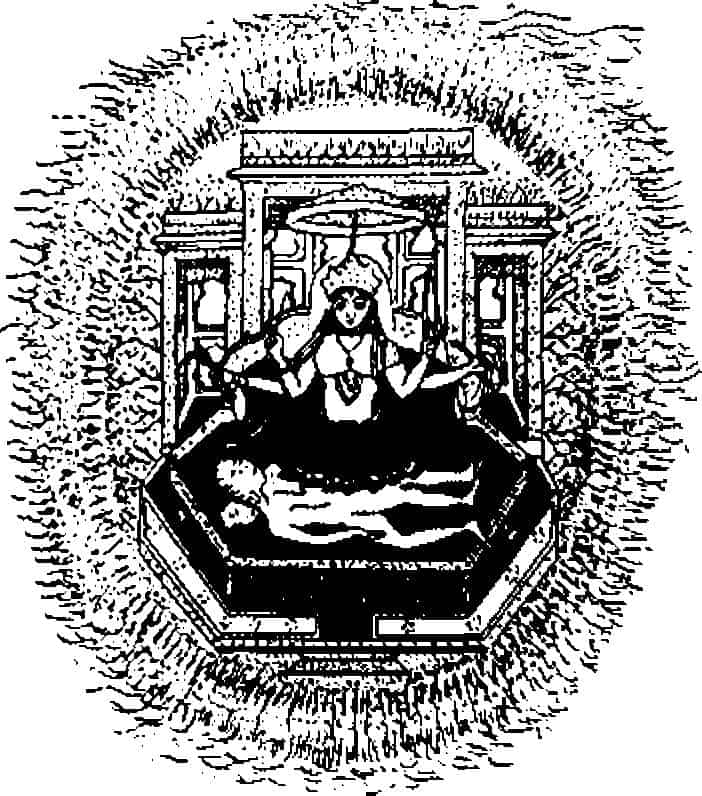

MS 399 yılında Fa-hsien, ilk Çinli Buddhist hacılar içinde en tanınmışı, tantanalı başkent Ç’ang-an’dan, Çin’den Roma’ya giden Eski İpek Yolu’nun başına çıkarak, Lop Nor’un çöllerine doğru cesurca yola atıldı. Altı yıl sonra Pencap’taki Taksila’ya ulaştı. Hindistan’a girdi ve bir altı yıl daha ülkeyi batıdan doğuya aştı, ustalara danışıp onlarla tartıştı, kutsal yerleri ziyaret etti, halkın erdemlerini ve Buddhist tapınakların güzelliğini memnuniyetle gözlemledi.
Günlüğüne şöyle yazdı: “Hindistan’ın bütün ülkelerindeki rahipliğin saygınlığını ve dinin şaşırtıcı etkinliğini tanımlamaya olanak yok. Efendi Buddha’nın Nirvana zamanlarından beri krallar, önde gelenler ve aile reisleri keşişler için manastırlar yaptırmışlar, onlara arazi, ev, bahçe, hizmetçi ve sürüler bağışlayarak onları desteklemişler. Bu tapınak arazileri bakır levhalar üstüne yazılmış belgelerle güvenceye alınmış, kraldan krala devam ediyor ve kimsenin bunları iptale cüreti yok. Viharalarda hücrelere yerleşmiş olan bütün yerleşik rahiplerin yatakları, hasırları, yiyecekleri ve içecekleri sağlanıyor. Zamanlarını yardım işleri, yazıları ezberlemek veya tefekkürle geçiriyorlar. Manastıra yabancı geldiğinde yaşlı rahiplerden biri onu konuk evine götürür, elbiselerini ve bağış tasını getirir. Ona ayaklarını yıkasın diye su, sürünmesi için yağ sunarlar ve özel yemek hazırlarlar. Bir süre dinlendikten sonra ona rahiplikteki rütbesini sorarlar ve buna göre ona oda ve yatak ayırırlar. Yağmurlar dindikten sonraki ayda dindarlar rahiplik için ortak bağış toplarlar ve rahipler de karşılık olarak büyük bir toplantı yapıp yasayı vaaz ederler.”{479}
Buddhizm Fa-hsien döneminde, ünlü Hindu sultam II. Çandragupta (MS 378-414) zamanında filiz veriyordu. Hindistan’da en eski manastır salonları ve şapellerini oluşturan kayalara oyulmuş Ajanta yapıları MÖ y. 50 yılma kadar gidiyorlar ve bu dönemde sayıları artıp süslemelerinde daha önce Hint sanatında görünmeyen sayısız motif ve güzel heykeller yer almaya başlamıştı. Çin Türkistanı’nın Buddhist mağara tapınakları büyük yarlara oyuluyordu. Ve 414’te, Çandragupta’nın ölüm yılında, Yunkang Çin Buddhizmi kaya mağaralarının yapımına başlandı. Buddha imgesi klasik matematik uyum içindeki formunu bu dönemde kazandı; taştan ve tunçtan dev heykeller yapıldı. Ve dayanıklı Çinli gezginimiz 411’de Ganj ırmağının ağzındaki Tamrilipti limanından gemiye binip, iki hafta içinde Seylan’a ulaştığında Buddhizme burada verilen önemin de anakaradan farklı olmadığını gördü.
Fakat bir gün bir tapınağa sunulmuş olan Çin taftası yelpazenin gözüne çarpmasıyla Fa-hsien gözyaşlarına boğuldu ve Cava yoluyla evine dönmeye karar verdi. İki yüz yolcu alabilen büyük bir tüccar gemisine bindi. Orada daha küçük bir gemiye geçti, bütün Buddhist imgeler, elyazmaları ve malzemesiyle 414’te Güney Çin’deki Kvan Çov limanına vardı.
Fa-hsien yolculuğu boyunca hep Buddhist topraklarında dolaşmıştı, fakat onun zamanında Buddhizmin bu ülkede ve koca Asya’nın çok yerinde ihtişam içinde olmasına karşın, artık başat yaratıcı güç Buddhizm değildi. Yeniden dirilen, çok daha geliştirilip işlenmiş olan ve saray tarafından desteklenip Brahmanlar kuşağı tarafından parlak biçimde ilerletilen Brahmanizm başat dindi. Brahmanlar yerliyle yabancıyı, gelişmişle ilkeli kaynaştırmayı, en zengin, ince ve kavrayıcı mitolojik sistemi veya sistemler galaksisini yaratmayı çok iyi biliyorlardı.
Bu çağın ünlülerinden biri Hindu şair Kalidasa’dır, zevkli oyunu Şakuntala’dan Goethe şu mısraları çıkarmıştır:
Eğer eski yılların çiçek açmasını ve sonrakilerin
meyve vermesini istiyorsan,
Beslemenin ve doyurmanın yanında çekici ve
heyecanlandırıcı olanı da iste,
Gök ve yeri tek adla yakalamaya çalış:
Ben senin içirt Şakuntala diyorum ve
her şey denmiş oluyor.{480}
Bütün Hint yaşamının, sanatının, yazınının, biliminin ve dininin aniden zenginleşmesi bize bu mucizevi çiçek ve meyve zamanından kalan yapıtlarla ulaştı. O zamandan beri Hindistan geçmişine baktığında bu mükemmelliği hep çok geçmişlere yansıtıyor. Sanki Hindistan binlerce yıldır bu olağanüstü gelişme döneminin zengin ihtişam ve uyumunu yaşamış gibi bir tasarım elde ediyor. Gerçekte, bu dönemin en dikkate değer özelliklerinden biri bu ihtişamı yaratmış olanların bütün yeni sanatları, bilimleri, ilahiyatları, toplumsal ve estetik değerleri kendi dehalarına değil, hayal edilen mitolojik bir geçmişin tanrılarına ve bilgelerine atfetme eğiliminde oluşlarıdır.
Böyle bir eğilim, elbette Hindistan’a özgü değil. Çin’de de bunu göreceğiz. Pentateukhos{481} yazarlarına esin kaynağı olan da buydu. Fakat MS beşinci yüzyıldaki Hint fantezisinin büyüklüğü ve inceliği oldukça istisnai bir durumdu. Dinsel inanç ve ritüelin yenilenmesi yanında yeni ahlaki ve toplumsal sistem başladı, görsel sanatlar, yazın, tiyatro, dans, ölümsüz Hindistan’ın yeniden canlanışını göstermek için kullanılabilecek her şey -gerçekte başlangıçların büyük bölümü de Hindistan’a değil Roma’ya aitti- kullanıldı.
Yaşlı Plinius (MS 23-79), “Hindistan bizden her yıl en az 550.000.000 sesters çekiyor ve bunun karşılığında bize çömleklerini veriyor; bunlar da bizim aramızda ilk maliyetlerinin 100 katına satılıyor” diye yazmıştı.{482}
“Hanımlarımız parmaklarında inci bulunmasından veya iki üçünün kulaklarından sarkmasından hoşlanıyorlar, hatta birbirlerine çarptıklarında incilerin seslenmesine bayılıyorlar; ve şimdi, günümüzde, en yoksul sınıflar bile bunları taklit ediyor, insanlar ‘halk arasında kadının inci takması önünde liktor{483} yürümesi kadar iyi şey’ diye laf çıkarttılar. Hatta bundan da fazlası, ayaklarına da takıyorlar, hem de yalnız sandallarının bağlarına değil ayakkabılarının her yerine, inci takmak yeterli değil, onları çiğnemeleri, ayaklarında onlarla yürümeleri de gerek.”{484}
Bu ticaretin kanıtları Madras Müze koleksiyonlarında görülen sayısız Roma parasıdır. Bu paraların üstünde Tiberius, Kaligula, Claudius ve Neron’un (MÖ 42 - MS 68) damgaları var; daha az bulunanlar Vespasianus ve Titus’a ait (MS 69 - 81) ve gene bol olarak Domitian, Nerva, Traianus ve Hadrianus’un (MS 81-138) paraları bulunuyor.{485} Ayrıca, Pilinius’un zamanından kalma Roma yurttaşı, adı bilinmeyen Mısırlı bir Yunanlı tüccarın, kendi gemisini kendi kullanırken tuttuğu seyir defteri var. Kızıl Deniz ile Hindistan arasında çok sefer yapmış, Kızıldeniz Seyahat Rehberi’nde anlatıyor.
Hint güneybatısının en önemli limanı Muziris’den söz ederek, “Arabistan’dan doldurulmuş ve Yunanlılarca gönderilmiş yük gemileriyle dolu” diyor. İhraç malları arasında biberle birlikte “çok miktarda güzel inci, fildişi, ipek kumaş, Ganj’dan Hint sümbülü, içbölgelerden malabathrum, her tür saydam taş, elmas, safir ve kaplumbağa kabuğu”nun adı verilmektedir.{486} İthal malları arasında sayılanlar şunlardır: “Şarap, İtalyan malı yeğleniyor...; bakır, teneke ve kurşun; mercan ve topaz; bir gez genişliğinde, parlak... ince kumaşlar; ... ülke parasıyla değiştirildiğinde kâr sağlayan altın ve gümüş para; ve fazla miktarda, pahalı olmayan yağ. Ve kral için buralara çok pahalı gümüş gemiler, şarkı söyleyen çocuklar, harem için güzel kızlar, hoş şaraplar, en güzel dokumalardan ince kumaşlar ve seçme yağlar getirilmektedir.”{487}
“Sahilden içerideki ülke birçok çöllük ve dağlık bölgeler barındırır, her türden vahşi hayvan yaşar; leopar, kaplan, fil, koca yılanlar, sırtlanlar ve her türlü babun.” Ayrıca, yazarın belirttigine göre “Ganj’a kadar uzanan çok kalabalık uluslar” vardır.{488}
Sir Mortimer Wheeler, kırkların ortalarında güneydoğuda, Koromandel kıyılarında yaptığı kazılarda bu döneme ait önemli bir Roma ticaret istasyonunu, Arikamedu’yu ortaya çıkardı. Raporunda “İtalya’da MS birinci yüzyıllarda yapıldığı bilinen kırmızı cilalı sayısız çömlek parçası ve dönemin Akdeniz şarap ticaretinin karakteristiği olan iki kulplu küpler ve amforalar, Roma lambaları ve cam eşyası, Arikamedu’nun ‘Yavana’, yani Greko-Romenlerin ve eski Tamil yazarların sözünü ettikleri Batı düzenli ticaret istasyonlarından biri olduğunu ortaya koymaktadır.” Bu limanın sanayisi boncuk yapımıdır. “Bu amaç için altın, yarı- değerli taşlar ve cam kullanılıyordu ve iki değerli taştan, oyma tekniğiyle yapılmış biri Greko-Romen tekniğini yansıtırken, tıraşlanmamış olan öbürü burada Batılı sanatkârların da olduğunu düşündürtmektedir.” Duvarlarla çevrili avlularda özenle inşa edilmiş su hazneleri ve kiremit arklar, “eskiden beri Hindistan’ın bu bölgesinin dikkat çeken ürünü olan ve klasik yazarlarca Hint ihraç malı olduğu belirtilen muslin kumaşının hazırlanışını” çağrıştırmaktadır.{489} Ve üç yüz mil kuzeyde Amaravati’de, MS birinci-üçüncü yüzyıl arasının zengin heykelleri ve süslemeleriyle dolu Buddhist stupasında Batılı insan temsilleri görülmektedir. Bazı heykeller tamamen Helenistik modelde yapılmıştır.{490}
Kısaca, MS birinci yüzyılda Hindistan-Roma ticaretinin çok canlı olduğuna ilişkin kanıtlar sayısızdır; bunun iki tarafı da etkileyen ticari ve kültürel sonuçları olmuştur. Mısır’da İskenderiye’de Hintli bilim adamlarına rastlamak olağan bir görüntüdür: Hem Dio Khrysostom (MS y. 100) hem Klement (MS y. 200) onlardan söz ederler.{491} Kuzeyde, MÖ y. 100 yılında açılmış olan, Roma’dan Çin’e giden Eski İpek Yolu’nda Kuşhanlar ticari ve diplomatik ilişkileri geliştirmekteydiler. Kervan ve gemi aracılığıyla işleyen sistematik dünya ticareti bu çağda kurulmuştu ve eski dünyanın Roma’dan (artık Fransa ve Britanya’yı da içeriyordu) Çin’e kadar dört güçlü bölgesinin karmaşıklığını ve gücünü artırıcı etkilerini devam ettiriyordu. Bunların hepsi masal başlangıcı gibi, Dr. Hermann Goetz’in, eski Baroda Müzesi Müdürü’nün gösterdiği gibi, MS beşinci yüzyılın başında Hindistan için çağ açıcı önemde bir olay olmuştur; bunun ilk evresi Roma’da başlamıştır.
Dr. Goetz “Hıristiyan şehitlere karşı [Romalıların] acımasızlıkları iyi biliniyor” diye yazıyor, “fakat dalga geçtiğinde babalarının dinine bağlı kalan kâfirlere yapılanlar da az değildi. I. Theodosius zamanında eski kültler sistematik olarak yok edildiler (379-395); altıncı yüzyılın sonuna kadar tamamen yok olmamış olsalar da, inatçı direnişe karşın yok etme sürdürüldü. Tapınaklar sistematik olarak kapatılıp yıkıldı, putperest kurbanlar ölüm cezasıyla bastırıldı, rahipler sürüldü veya öldürüldü.”{492} Ve “sürgünler sığınabildikleri ülkelere” gittiler diyor Dr. Goetz, “Hindistan Akdeniz’le kurduğu eski ticari bağlarla bu ülkelerden biriydi”.
Hoşgörülü Hindistan’da II. Çandragupta döneminde (378-414; bu tarihler 1. Theodosius dönemini kapsayıp aşıyor) mimarlık, heykelcilik, yazın, toplumsal, dinsel ve felsefi formlar aniden gelişme gösterdi. Hindistan’da daha önce bilinmeyen, fakat son dönem Roma’sıyla yüzlerce bağıntı taşıyan konularda ilerlemeler görüldü.
Birkaç ayrımı üstünde duralım.
Mimarlık alanında: Helenistik templum in antis’in küçüğünü anımsatan dikdörtgen taş iç odası, sundurması ve sıra sütunları bulunan yapılar Hindistan’da 11. Çandragupta döneminde birden bire ortaya çıkar ve çoğalır ve daha halefi I. Kumaragupta döneminde (414-453) taş iç oda tepesinde piramidimsi bir kuleyle tamamlandı; zigguratı çağrıştıran bu ekleme bu dönemde Hindistan’a Babil-Helenistik astronominin girmesiyle açıklanmıştır. Ayrıca, Roma sanatından nişlere yerleştirilen heykel düşüncesi, birbirine dolanan süsler arasında Erotes’in dolandığı özel friz süslemeleri, çıkıntılı küplerden oluşan bir başkası, taç yapraklarından oluşan gene bir başka usul ve dört veya daha fazla yapraklı rozetta süslemeleri alınmıştır. Ayrıca, defne veya akantos çelenkleri biçiminde sütun tabanları, yeni Buddha tahtı biçimleri, aşağı sarkıp gevşek biçimde desteklerle birleşen inci dizilerinden çelenkler; yarı açık kapıdan içeriyi gözetleyen bir kadını gösteren Roma lahitlerinden alınma motif. Hayali su hayvanları (makara), kuş biçimli Harpi{493} (kinnari), aslan maskeleri (kırtimukha), süzülüp uçan kutsal çift (gandharva ve apsara), tunç kakmacılık teknikleri, mine ve değerli taş oymacılığı ve yoğun bir uyarlamadan başka anlama gelmeyecek sayısız benzeyiş; Dr. Goetz’in kesin biçimde göstermiş olduğu gibi, düşünce biçiminden yazın biçimine, dans figürlerinden saç yapma biçimlerine kadar birçok ayrıntıda ortaya çıkan bir ortaklık.
Fakat önemli nokta burası ki: “Birçok yeni düşüncenin, tekniğin ve biçimin Hint sanatında yeni ve en önemli bölümün açılması sonucunu verecek yoğunlukta alınmış olmasına karşın, asla enblock{494} alıntılanmış bir şey olmadı... Her şey Hint kavramlarıyla parçalanıp yorumlandı ve Hint ilkeleriyle yeniden kuruldu.”{495}
Helenist insan gövdesi anlayışı karşısında Hintli anlayış geliştirildi. Helenist-Romen tipolojisine karşı Hintli tipolojisi geliştirildi ve tamamen başka bir yaşama hizmet etti. Alınan mimari ve heykelcilik tipleri uyarlandı veya yerlerine benzerleri Hintliler geliştirildi: Triton{496} yerine gandharvalar, akantos yerine nilüferler kondu. Brahmanlar yerli folklardan kendi amaçları doğrultusunda sistematik olarak yararlanırlardı (fakat hiç bir zaman sürekli ona bağlı kalmazlardı). Ve sonuç, bir kez daha Dr. Goetz’in deyişiyle, “zamanımızda ancak nazizm ve komünizmin canlandırabildiği biçimde tarihin yeniden yazılması”ydı.{497} Gerçek geçmiş yok edilmiş, mitsel bir geçmiş yaratılmıştı ve hal, görünüşte her zaman için, bütün sapkınlıklara, eleştirilere ve gerçeğe karşı onaylanmış oluyordu.
“Gupta devrimi eski rişilerin, kahramanların ve tanrıların ‘eski iyi zamanları’nı geri getirme sloganıyla başarıya ulaşmıştı. Gerçekte hummalı bir kültürel gelişme oluşmaktaydı. Fakat bütün yenilikler geçmişte, becerilebilirse tanrılar tarafından ilan edilmiş oldukları ileri sürülerek yapılmaktaydı.”{498}
Cesur Çinli hacı Fa-hsien’in, Hindistan’a hayran kaldığı canlı dönem işte buydu: Hindistan’ın, insanoğlunun uygarlığına önderlik ettiği altın zamanı.{499}
Hint Altın Çağının ana mitolojik belgesi Mahabharata destanıdır; malzemesinin büyük bölümü belirlenemez tarihlere aittir, belki MÖ 400’den eskidir, fakat son biçimi ve anlatımını MS y. 400 ve sonrasında kazanmıştır. Yapıt her türlü mitsel, ritüel, ahlaki ve şecereyle ilgili bilgilerle doldurulmuş bir tür son dönem buzultaşı gibidir; İlyada ve Odysseia’nın sekiz katı uzunluktadır. Bir uzmanın deyişiyle, “çok farklı görüşlerin, daha da önemlisi birbirinin hemen ardından görünürde hiçbir uyumsuzluk yokmuş gibi anlatılan çok farklı görüşlerin” toplamıdır.{500}
Yapıtın ana örgüsünü burada sunmaya çalışmak sıkıcı ve yararsız olur. Fakat destanın yazarı olduğu varsayılan kişi, ilk kitabında maceranın mükemmel bir örneklemesini yapar. Büyük rişi Vyasa Hindistan’ın Homeros’u olarak adlandırılmıştır, ama gerçekte ondan daha geniş kapsamlıdır. Truva Savaşı yanında iki taraftaki bütün kahramanları da anlatan bir Homeros olabilir. Adının anlamı da vy-asa “her yönde (vi-) dağıtan ve gönderen (as)” demektir; daha uygunu olamazdı. Çünkü bu adam yalnızca bu şaşırtıcı büyük yapıtı yazmakla, iki tarafın da ana kahramanlarının soy öykülerini tutmakla kalmamıştır, hepsi on sekiz veya daha fazla olan Puranaların da yazarı (MS dördüncü yüzyıldan on altıncı yüzyıla kadar gelen bir dizi daha küçük destandır), dört Veda’nın derleyicisi, Veda felsefesinin yaratıcısı ve bunların yanında mükemmel bir orman münzevisidir.
Bu rişinin tipik Hintli yaşamöyküsü, Kanişka dönemi şairlerinin çoktan özlemini çekmeye başladıkları şu altın çağa gider. Bu çağ Hindistan’a dünyanın başka yerlerinde bilinenden her bakımdan üstün bir geçmiş sağlamıştır. Bu masalımsı dönemde Hindistan’da adı Vasu olan bir kral vardır. Bu kral erdeme (dharma) bağlıdır, ama avcılığa bağlılığı da bir o kadardır. Ve o sırada başkent yakınındaki, eteğinden akan ırmağa kavuşma isteğiyle çıldıran bir dağ, ırmağa sarılmış ve önünü kapatmış, artık ırmak suları kentten geçemez olmuş. Kral gidip dağa tekme atmış. Irmak bu çukurdan akmaya başlamış, ama gebe kalmış ve bir kız, bir oğlan doğurmuş. Çocukları sevgiyle krala vermiş, o da oğlanı general ve kızı karısı yapmış. Kızın adı Girika “Dağın kızıydı. Adet görme zamanı gelip geçince kocasına söyleyip temizlenmek için ırmağa gitti.
Dharma ilkesine göre kocalar, aybaşı hallerinin hemen peşinden karılarıyla cinsel ilişki kurarlar; çünkü -Vedacı değerlendirmenin yanılmaz doğrularına göre- çocuk yapmak için en uğurlu zaman bu zamandır. Ve kral da, Girika’nın hazır olduğu bilgisini aldığında, bağlılık duyduğu görevini biliyordu. Fakat okuduğumuz gibi, aynı biçimde av zevklerine de bağlıydı. Öyle oldu ki, daha karısı ırmaktayken, yaşlı akrabaları gelip onu geyik avına çağırdılar. Yaşlılara itaat edilmesi gerektiğini düşünerek, evliliğe ait olana değil ailevi dharmaya uyarak onlarla gitti.
Girdiği ülkede sayısız çiçekli ağaç vardı. Ayrıca, bütün orman o mevsimde kuş cıvıltılarıyla ve sarhoş arı vızıltılarıyla çıldırtıcı hale gelmişti. Mevsim bahardı, içinde ilerlediği orman yer cinlerinin bahçeleri kadar hoştu. Aklına evlilik dharması düştü ve arzuya yenilerek çok güzel çiçekleri olan ağır kokulu bir ağacın dibine oturdu. Aklı çılgınlıkla eridi, bunalıma düştü ve tohumlarının zayi olmaması gerektiği düşüncesine kapılarak geniş bir yaprakta topladı. Yukarıda süzülen bir doğan gördü: “Ey arkadaşım, bunu gününde olan karıma götürür müsün?” diye seslendi.
Kuş görevi yüklendi, fakat yolda ikinci bir doğan yükü et sanarak saldırdı ve tohumlar Cumna ırmağına düştü. Irmakta bir balık bunları hemen yuttu, gerçekte kılık değiştirmiş bir su perisiydi ve onuncu ayda talihsiz balığı bir balıkçı yakaladı. Balığın içinde bir kızla bir oğlan bulup şaşırdı. Krala sunulan oğlan zamanla kral oldu; fakat kız, iyice fark edilebilen balık kokusu olduğundan, kızı olarak balıkçıya gönderildi. Ve kurtulan peri göğe yükseldi.
Mahabharata yazarının soyuyla ilgili masalın birinci bölümü böyle.
İkinci bölüm kızı anlatıyor.
Olağanüstü güzelliği vardı ve ona bütün erdemler bağışlanmıştı. Adı Satyavati “Gerçek”ti, fakat Balık Kokusu olarak tanınırdı. Ve üvey babasına hizmet ederek Cumna ırmağının suları üstünde kürek çekiyordu. Bir gün, adı Paraşara olan büyük, çok büyük bir yogi karşı kıyıya geçirilmek için geldi. Ve kayıkta kendisine gülen, sütun bacaklı kızı görünce aniden arzusuna tutsak oldu. Fakat kız: “Ey kutsanmış aziz, kıyıda karşıya geçmeyi bekleyen başka azizler var; görebilirler” dedi.
O zaman yogi kendilerini kapatması için sis getirdi; bunu görünce kızın kafası karıştı: “Ben babasının yanında oturan bir bakireyim” dedi, “ey günahsız aziz, bunu bil, düşün ve öyle davran”.
Kızın huyundan çok hoşlanan yogi, kıza, güvence verdi: “Ürkek kız, bekâretini gene kazanabilirsin” dedi. “Ayrıca, benim hiçbir arzum meyvesiz kalmaz. Bana arzuladığın bir şey söyle.” Kız gövdesinin güzel kokmasını istedi ve arzuları karşılıklı gerçekleşti. Kız bekâretine gene kavuştu ve bundan sonra Gandhavati “Güzel Kokulu” olarak tanındı. Erkekler kızın güzel kokusunu bir fersah uzaktan alıyorlardı.
Öteki kıyıya varan yogi, inziva yerine gitmek için yola koyuldu ve kız, zamanı gelince, gizlice kutsal Cumna ırmağının ortasındaki ağaçlıklı bir adacıkta bir oğlan doğurdu. Bekâreti bir kez daha geri geldi. Ve bebek, ayağa kalktığında, ormana doğru yürüdü, ayrılırken “Bana gereksinmen olduğunda, beni düşün Ana, ben hemen görünürüm” dedi.{501}
Okuyucu bu masalın gerçek olduğuna belki inanmayacaktır. Ama bu oğul Vyasa’dır ve bu kutsal olayları kendisinin koca kitabından okuyoruz -bundan sonra annenin, hâlâ bakireyken, kokusuna kapılıp kayığına gelen büyük, çok büyük bir kralla olan macerasıyla devam ediyor-.
Ve bu iyilik dolu, artık yaşlanmış Santanu adlı adam, mükemmel oğlu Bhişma’ya veliahtlık hakkı verdiğinde, şaşkınlık içinde, birkaç yıl önce onu doğuranın ırmak tanrıçası Ganj’ın kendisinden başkası olmadığını öğrenmişti. Şimdi kutsal ırmak Cumna’ya yaklaşırken, olağanüstü bir koku aldı ve kaynağına ulaşmak isterken balıkçı kastından güzel kızın kayığına vardı.
“Ey ürkek, güzel kız, sen de kimsin?” dedi.
Kız yanıtladı: “Ben, efendim, buranın baş balıkçısının kızıyım ve babamın hizmetinde hacıları bu kıyıdan öteki kıyıya taşırım.”
Kral doğrudan babaya gitti, fakat balıkçı ona şöyle dedi: “Eğer kızım için duyduğunuz istek yasalsa bana kızımdan doğacak oğlunuzun tahtın tek varisi olacağına söz vermelisiniz.” Ve bunu duyunca yaşlı kral neye uğradığını şaşırdı. Başkenti Hastinapur’a gitti ve üzüntü içinde, hep bu kızı düşünerek günlerini geçirmeye başladı.
O zaman mükemmel oğlu, Bhişma, babasının hastalığının nedenini bularak beraberinde prensler balıkçıya gitti. “Dostum, bu prensler önünde, babamın kızından olacak oğlunun, kralımız olacağına yemin ediyorum” dedi. Fakat balıkçı, “Sizin yemininizden kuşkum yok efendim, ama başka olası oğulların iddiaları ne olacak?” diye yanıt verdi. Prens dedi ki: “O zaman ikinci bir yemin etmeliyim; yaşam boyu bekâr kalacağım.” O zaman balıkçının tüyleri ürperdi. Selam verdi. Ve ırmağın bakiresi böylece evlendirildi.{502}
Böylece, kayıkçı güzelinin sonraki oğullarının öykülerine geliyoruz. İyi kral Santanu’nun iki oğlu oldu. Büyüğü tahta çıktı, fakat genç yaşta savaşta öldü. İkincisi de, çok ufakken veremden öldüğünden varis olarak iki çocuksuz dul kaldı. Güzel boylu, dalgalı parlak saçlı, kırmızı tırnaklı, büyük göğüslü ve geniş kalçalı dullar. Ve dul ana kraliçe, Satyavati Bhişma’ya, “Soyun devamı yok. Ama sen Veda eğitimi görmüş, güçlü, erdemli birisin ve eminim soyun sürmesiyle ilgileniyorsundur. Sana bir iş vereceğim, tahta çıkıp kral ol, ritlerimize göre kızlarla evlen ve oğul sahibi ol.”
Bhişma ona babasının istediği yemini anımsattı ve kraliçenin aklına, sıkışınca, yürüyüp giden bebeği geldi.
Vyasa, artık büyük bir bilgeydi, Vedaları yorumlama işine dalmıştı, ama annesi onu düşününce, söz verdiği gibi hemen göründü.
Annesi ona derdini söyleyip onu gözyaşlarına boğunca, “Yama ve Varuna gibi oğullar yapacağım. Ama önce genç hanımlar benim istediğim bazı yeminleri vermeliler” dedi.
Kadın, “Ama krallığımız tehlikede, işin bugün yapılması lazım” dedi.
“O zaman” dedi Vyasa “onlara çirkinliğimi, suratsız görünüşümü, çarpık gövdemi, kötü kokumu ve korkutucu giyimimi hoş görmelerini söyle. Eğer bunu yapabilirlerse gürbüz oğulları olur. Büyüğü süslensin. Temiz bir elbiseyle beni yatakta beklesin.” Ve gözden kayboldu.
İncelikle ikna edilen kız yıkandı, güzelce süslendi, Satyavati onu yatağa götürdü. “Burada yatacaksın” dedi, “eşinin büyük kardeşini bekleyeceksin.” Ve genç dul, sözü edilen büyük kardeşin Bhişma olduğunu sandığından mutlu, düşüncelere dalarak
uyanık uzandı. Lamba yandı. Kapı açıldı. Biri girdi. Ve kız, irkilerek, gelenin siyah parlayan suratı, ışıklar saçan gözleri, bakır gibi kalkmış saçları, kaba bir sakalı ve yaklaştıkça kokusu dayanılmazlaşan bir derviş olduğunu gördü. Gözlerini kapadı. Derviş Satyavati’ye döndüğünde, “Oğul, on bin fil gibi güçlü ve bin oğulun babası olacak. Ancak annesinin başarısızlığı yüzünden, birleşme anında gözlerini kapadığı için kör olacak” dedi.
Ve çocuk gerçekten kör oldu. Büyük kral Dhritaraştra (krallığa “raştra” güç veren “dhrta”) oldu; Kauravaların babası, Mahabharata’da düşman taraf. Fakat Satyavata çocuğu görünce gene Vyasa’yı düşündü ve derviş gene görününce, gene denemesini istedi.
İkinci sevimli dul, kuşkulanmaksızın yatağa geldi. Koca odadaki lamba yanıp tükendi. Kapı açıldı. İçeri biri girdi ve kız gözleri kocaman açık, sarardı. Aziz onunla birleşti ve “Sen soldun, oğlun da solacak. Ona Pandu diyeceksin” dedi (pandu: beyaz, saman sarısı, solgun).
Ve doğan oğul gerçekten solgundu. Fakat Pandavaların, Mahabhara’nın beş kahraman kardeşinin babası oldu: Yudhişthira, Bhima, Arjuna ve Nakulşa ile Sahadeva ikizler.
Kısacası, destansı savaş Karanlık Oğulları (gözlerini kapatandan doğan kralın oğulları) ile Işık Oğulları (gözlerini açık tutanınkiler) arasında geçiyor. Fakat bir üçüncü doğum daha var. Çünkü gene tatmin olmayan Satyavati, iki genç kraliçeden birincisi için bir fırsat daha yarattı. Fakat kız yerine bir köle koydu. Yogi bu Şudra kızıyla Satyavati’nin isteğini yerine getirdiğinde, kız kalkarak önünde eğildi. “Ey sevecen hanım, sen artık köle olmayacaksın” dedi aziz, “oğlun da çok yetenekli olacak.” Gerçekten köle kızın oğlu büyük bilge Vidura, Pandavaların öğütçü amcası oldu ve sonunda aydınlık yogiliğe kavuştu.{503}
Işık ve Karanlık motiflerini okuyucu MÖ y. 500’lerin İran’ından anımsayacaktır; Gerçeğin Efendisi ile Yalanın Ustası arasındaki kozmik savaşı. MÖ y. 175-MS y. 66 dönemine ait{504} İbrani Ölü Deniz Yazmalarında, Işık Oğulları ile Karanlık Oğulları arasında gene ortaya çıkar. MS ilk yüzyıllarda çeşitli gnostik yapıtlarda motifin başka geliştirilmiş biçimleri de bulunur. Bütün bu levanten uyarlamalarda savaş aynı anda hem ahlaki hem ontolojiktir. Doğruluk ve ışık ilkesi erdem ve gerçek varlığı temsil eder. Hem toplumsal çerçevesi hem de mutlak geçerliliği vardır ve sonunda kozmik açıdan zaferi o kazanacaktır. Bu sistemlerde toplumsal ve metafizik yaklaşımlar arasında hiç ayrım gözetilmemiştir.
Buddhist Amida mitolojisinde de, aynı biçimde, ışık ve gerçek bilgi ilkesi aynı anda hem ahlakidir hem de cismani özü vardır. Burada ışığın nihai zaferi kozmik terimlerle ifade edilmemektedir. Çünkü Buddhist sonsuz daireler kozmosunda, dairelerin duracağı zaman ötesinde zamana yer yoktur. Buddhist zaman aralığı psikolojiktir, istenmeyen sıradan çıkmak gibidir. Gene de ışık ilkesi, karanlık sıraya göre daha doğru düzendir ve daha öz sahibidir. İkincisi cahillik ve arzunun basit işlevidir -onların tutsak edici, körleştirici büyülerinin işi-. Sonuç olarak, Batı sisteminde toplumsal ve metafizik düzenlerin eşitlenmesi gibi Amida’da da psikolojik ve metafizik olanlar eşitlenmektedir.
Brahmanların, fiziksel açıdan olanaksız Vyasa yaşam öyküsünde kurgulanan simgesel oyunda, saçma görünmekle birlikte fazlasıyla işlenmiş, geliştirilmiş daha karmaşık bir yön görünüyor. Şurasına dikkat edilmeli ki, ışık ve karanlık kutuplarının yaşam kavgasını anlatan ünlü Hint türevinde, sonuçta ne aydınlık ne de karanlık kazanıyor. Ayrıca, iki güç de tek üstün güçten, Vyasa’dan türüyorlar. Işık ve Karanlık oğulları arasında ahlaki bir değerlendirmeyle taraf tutulmasına karşın, yargıya varmak olanağı yok. Tersine, iki taraf da düalist bir düzenin iki eşit tarafını oluşturuyor, belirli koşulların işlevleri halindeler. Bir an durup kraliçenin acil, yararcı sonuçlar elde etmek için sabırsızlanışını düşünelim. Bu alanın hazırlanmasını olanaksız kıldı ve iki kızın gerçekte aynı biçimde masum olan zıt tepkiler vermesine yol açan neden de aslında bu. İnsan tarihindeki ışık ve karanlık oyunu, böylece insan zayıflığının işlevi olarak ortaya çıkmış oluyor; oyun süresince ahlaki yargılarda bulunmanın olanaklı olmasına karşın, atfedilen erdem ve günah gerçekte ikincil derecede bir alana ait. Tamamlayıcı nitelikteler. Eski Mısır’ın iki Ortağın Gizi’yle karşılaştırın! Işık ve karanlığın oynadığı kozmik gölge oyunundan daha geniş, gelişkin bir görüş ortaya çıkıyor ve Mahabharata’nın içeriğinde bu soy üreten ve bölüme tanıklık edenle temsil ediliyor. Yukarıda tanışılan Ptah, Apis boğasının babası Mumya kimliğiyle, sonraki Hint Tantrik simgeciliğinde eşdeğeri Şiva olan Firavunu karşılaştırın. Şiva-Ceset de özünde bir olmakla birlikte, dünyayı üreten Şiva-Şakti çiftine yüz çevirmiştir (Bkz. s. 94 ve Şekil 21). “Ben” diyen ve iki olan atmanı anımsayın!
Daha sonraki Brahman Mahabharata sistemi, Buddhist Amida sisteminin tersine, dünya mayasından kaçış kadar ona dâhil olmayı da içerir. Fakat bu dâhil oluşta Batı ahlaki pozitivizminin temsil ettiği gibi dünya değerlerinin değersizleştirilmesi yoktur. Dönüş iyileştirilemez; değerleri de kendi ötesinde anlam taşımamaktadır. Ve gene de -Vyasa yaşam öyküsünün açıkça gösterdiği gibi- dünya bilge tarafından ironik biçimde olumlanabilir: Biraz ciddiye binen çocuk oyununda yetişkinin olumlaması gibi.

Şekil 21
Mücevher Adası: Hindistan (Rajput). MS y. 1800
Ve şimdi, sonuçta, bu ironik masalda ve maya oyununda bütün gücü temsil eden Satyavati kimliğine geldiğimizde; hem Vyasa’nın hem de genç ölen iki kralın annesidir. Kozmik maya gizeminin üç gücü vardır. Birincisi, Brahman’ı gözden saklamak, ikincisi dünya hayali yaratmak ve üçüncüsü hayal içinden Brahman’ı ortaya çıkarmaktır. Satyavati kayığında yogileri öteki kıyıya taşımaktadır ve bu işiyle mayanın ortaya çıkarıcı gücünü temsil etmektedir. Fakat aynı zamanda öteki kıyıdan bu tarafa yolcu da taşımaktadır, yani gizlemekte ve açığa da çıkarmaktadır. Onunla bu kıyıda kalmış olan iyi kral Santanu’nun isteğine hizmet ederken bütün alanın ve Mahabharata evrenindeki ışık ve karanlık oyununun harekete geçirici gücü olmaktadır. İki kıyının ortasında pek de mükemmel olmayan yoginin isteğine hizmet ederken büyük Vyasa’nın, Vedaların derleyicisinin, Puranaların yazıcısının vb. annesidir. Vyasa dünyaya değerlendirici yazısını vermiştir ve iki ailenin babası olarak, bu kıyıda bile, özünde açıklayıcı bir tarih yazmıştır, fakat bu tarih eğer salt gerçeklik olarak okunursa örtücü olur.
Satyavati, kralı çeken kişilik olarak güzel koku sahibidir, fakat bu onun gerçek kokusu değildir. Krala anlatılan bekâreti de gerçek değildir. Dünyaya itici gelen kokusu gerçek kokusudur, yogi tarafından istekle kucaklanmıştır. Yoginin gerçek amacıysa öteye geçmektir. Ve kızın içinden çıktığı, yaşamın durmadan akan ırmağı, bütün yaşam gibi tüm Doğu simgesel yazınında kutsal rahmetin görüngü alanına dökülüşüdür. Bir yandan (bir kıyıda), neşe ve acı, erdem ve günah, bilgi ve hayal alanıyken, öte yandan (öteki kıyı) değiştirildiğinde veya başka türlü okunduğunda, bu tamamlayıcı ilkeleri ilkelerin ötesinde olan mutlaklığa götürür. Ve aradaki adada büyük Vyasa doğmuştur; mitosun dünyası ve kaynağı burasıdır -Mahabharata’nın-. Burası kendi içinde gerçek ve sahte, açıklayıcı ve gizleyicidir ve yaşamın kendisi gibi, insanın yeteneğine göre iki türlü de okunup anlaşılabilir.
Bu mitos okyanusunun olay örgüsünü anlatmamaya söz verdim. Tamamlarken şurasına işaret edeceğim, kör Dhritaraştra tahtından vazgeçiyor ve Pandu “solgun olan” kral oluyor. Fakat onun genç ölümüyle büyük kardeş tahta dönmek zorunda kalıyor. Dhritaraştra sayısız oğulları, Kauravalar ve Pandu’nun beş mükemmel oğlu Pandavalar bundan sonra Vedacı Hindistan’ın feodal çağının şövalyelik çiçeklerinin söndüğü kan banyosuna dalıyorlar.
Destanın son beş kitabının (14 - 18) kahramanlık dönemi sonrası bir kasta ait olduğu açık. Yudhişthira, Pandavaların en büyüğü savaşın bütün günahlarından yıkanıp arınılan at kurbanı düzenliyor. Yaşlı Dhritaraştra ve karısı binlerce oğullarından tam anlamıyla kopup ormana çekiliyorlar. Beşkardeşe sayısız çatışma sırasında büyük rahatlık sağlayan ve yardımcı olan Tanrı Vişnu’nun yeniden can verdiği kutsal kardeşler, esmer Krişna ve beyaz Balarama ölüyorlar ve Pandavalar da ortak karıları sevimli Draupadi’yle (yaşamın çekiciliği) birlikte ağaç kabuğundan elbiseler giyip, ayaklarının dibinde bir köpek, yaya olarak cennet yoluna düşüyorlar. Himalayaları geçip dünya dağı Meru’ya varıyorlar, büyük gayretle tırmanıyorlar. Yolda Draupadi ölüyor ve art arda Sahadeva, Nakula, Arjuna ve Bhima ölüyorlar, Yudhişthira yanında yalnız köpeği, tek başına zirveye ulaşıyor. Tanrı İndra arabasıyla onu götürmeye iniyor, fakat o, karısı ve kardeşlerini cennette bulacağı ve köpeğinin de alınacağı sözü verilmeden gelmemekte inat ediyor. Hayvan kabul ediliyor ve tanrı Dharma oluyor. Kardeşler ve eş oysa bulunamıyor, çünkü cehennemdeler. Büyük düşman karanlık Kauravaların önderinin tahtta ihtişamıyla oturduğu cehennemde. Yudhişthira cenneti öfkeyle terk ediyor, cehenneme iniyor; burada yalnız kardeşlerini değil, birçok dostunu da korkunç yıkım içinde buluyor. Sonra az günahla ölenlerin önce temizlenmek için cehenneme gittiklerini, sonra cennete geleceklerini, az erdemleri olanlarınsa iyiliklerinin karşılığını kısa sürede görmek için önce cennete çıktıklarını cehennemde uzun ve korkunç bir ceza göreceklerini öğreniyor (birlikte biz de öğreniyoruz).
Cehennem sahnesi bitiyor ve Pandavaların hepsi tanrılar gibi cennete yerleşiyorlar. Fakat onların soy babası Vyasa, halen dünyada iş başında. Bir tür eon tamamlanmış: Mahabharata’nın kendisinden türeyen bütün evreni hayal gibi gökte kaybolmuş. Ve şimdi o sözlere, kutsal sözlere, her şeyin gerçeğini anlatan sözlere başlayacak.
Şimdi Vyasa’nın adı Vaişampayana olan bir yardımcısı var. Bütün öyküyü ona aktardı; ve bu eğitim görmüş adam yılan büyüsü yapılan büyük bir festivale katılacak. Janamejaya adlı bir kral babasının yılan tarafından ısırılıp öldürülmesinin öcünü dünyanın bütün yılan soyunun son Vedacı ateşte ölene kadar sürünmelerini sağlayarak almak istemiş. Vaişampayana Mahabharata’yı bu törenin aşamaları arasındaki boşlukta ezberledi. Ugraşrava adlı bir ozan bunu duydu ve daha sonra bir dizi aziz yanına katılarak kendilerine de öğretmesini istediler -o da öyle yaptı-. Elimizdeki Mahabharata’nın kaynağı da bu. Ozan sözleri bir bilgeden, o da Vyasa’nın kendisinden duymuş.{505} Artık Vyasa bu dünyadan ayrıldı, kendi yarattığı ve ölümünü seyrettiği dünyadan yoga uçuşuyla güneşin alevli kapısına daldı.{506}
Buddhizm özgün biçimiyle yeniden başka bedene girme öğretisidir; başı tıraşlı, tas taşıyan, öteki kıyıyı bulmak için manastır yaşamına çekilmiş keşiş tarafından temsil edilmektedir. Gupta canlanmasından sonra yeniden yaşam bulup gelişen Brahmanizm ise öte yandan, yalnızca manastırı amaçlamakla kalmaz, laik toplumun işleriyle de eşit biçimde uğraşır. Bu bağlamda dharma terimi Buddhizmdeki gibi öncelikle terk ediş öğretisine değil, fakat kozmik yasalar sistemine ve evrenin bunlarla var olduğu süreçlere de aittir. Terim “tutmak, desteklemek, sağlamak” anlamındaki fiil kökü dhr’den gelmektedir ve anlam olarak, gördüğümüz gibi, Mısırlı maat ve Sümerli me’nin karşılığıdır. Dolayısıyla, Buddhist mitolojide dünya düzeninin kutsal biçimde oluşturulması ve sürdürülmesine ait bir konu olmayıp yalnızca Kurtarıcı’nın yaşamöyküsü yer alırken ve ondan görüngünün acılarından kurtulmanın yollarını öğrenmek gerekirken, Brahmanizm’in mitolojisinde daima ikili ders vardır; dharma ve yogaya, bağlılık ve terk edişe aynı anda hizmet eder.
Mahabharata’dan okuyoruz. “Ey kral, krallara layık biçimde, bütün iyi insanların yürüdüğü geleneksel biçimde yürü. Zahitlerin inzivalarında kastının erdemini (dharma) ve kazanım (artha) ve zevklerini (kama) yitirmiş yaşayarak ne kazanacaksın?”{507}
Buddhizmin anlayışında varlığın doğası mutlak boşluktur ve öznesi yoktur; görüngünün biçimleri hayal gibi hiçliğin üstünden geçer, cahilliğin büyüsüne tutulmuşlardır ve tek ilgilendikleri onun bozulmasıdır.
“Yükselen cahillikten karma biçimleri yükseliyor. Cahilliğin durmasıyla karma biçimleri duruyor.” Hinayana Pali kitabının sözü budur.{508}
“Biçim boşluktur, boşluk biçimdir. Boşluk biçimden başka bir şey değildir ve biçim de boşluktan başka bir şey değildir. Boşluk dışında biçim yok ve biçim dışında boşluk.” Bu da öteki kıyının Mahayana bilgisi.{509}
Ortodoks Vedacı-Brahmancı-Hindu anlayışta ise, kendini veren gücün (brahman) gerçekleşmesi her şeyde içkin ve aşkındır, her benlikte (atman) olduğu gibi. “Ben” deyip korku hisseden ve dünyaya dökülen benlik gibi kendi benliğini vermiştir.{510} Dolayısıyla, bu varlığın yaratıcı gücü -boşluk değil- her şeyde tanınması ve yaşanması gerekendir. Çünkü bilinemese de her yerde vardır.
Her şeyde gizli olmasına karşın,
Bu benlik parlayıp görünmüyor.
Ama görmesini bilenler görüyor
Üstün, uyanık akıllarıyla.{511}
Bu Varlıklar varlığını bilmenin yolu Buddhistlerin yolunu andırıyor gibi gelebilir, çünkü ona da benin (aham) terk edildiği benliği kurban etme yoluyla ulaşılabilir.
Kendisini kendisiyle fethedene
Kendisi arkadaştır.
Kendisini kendisiyle fethetmeyen
Saldırır kendine düşman gibi.{512}
Fakat benlik kurbanıyla elde edilecek olan varlık bilgisidir, yokluk değil; kendini kurban ettiği bu Varlıkla elde edilen dünya mucizesidir.
Dolayısıyla, Hinduizm’in özünde kozmik düzeni kutsal olarak olumlama var. Ve toplum da kozmik düzenin parçası olarak kabul edildiğinden, ortodoks Hint toplumsal düzeni de aynı biçimde kutsal olarak olumlanmıştır. Dahası, doğanın düzeni sonsuz olduğundan, bu ortodoks toplum da böyle kabul edilmiş. Toplumsal alanda insan özgürlüğü veya yeniliğe karşı hiç hoşgörü yok; toplum, çağdaş Batı’da ve ilerlemiş Yunan ve Roma’da da olduğu gibi, insanlar tarafından geliştirilen, akıl ve değişime konu olan bir düzen olarak kabul edilmiyor. Onun yasaları doğaya aittir, tercih hakkı yoktur, değişip gelişmez veya tasarlanmaz. Güneş, ay, gezegenler, bitkiler ve hayvanların kendi doğalarından gelen yasalara tam anlamıyla tabi olmaları gibi, birey de kendi doğuştan gelen doğasına tabi olmalı, Brahman, Kşatriya, Vaişya, Şudra veya Parya olarak kaderini yaşamalı. Her birinin bir tür oluşturduğu düşünülmektedir. Ve farenin aslan olamayacağı gibi, Şudra da Brahman olamaz; olmayı isteyen delirmiştir. Hintçe dharma sözcüğünün ‘erdem, görev, yasa’ derin, çok derin anlamları vardır. “Kendi görevini kötü yapmak, başkasınınkini mükemmel yapmaktan iyidir” diye okuyoruz.{513} Yunan ve Rönesans’ın birey düşüncesi bu sistemin sınırlarında basitçe yer almamaktadır. İnsan daha çok dividuum, bölünmüş insandır, büyük insanın (puruşa), toplumun kendisinin bir organı veya işlevini temsil etmektedir. Rahip kastı Brahmanlar bunun başıdır, Kşatriya yönetimdeki kast kollarıdır, Vaişya, mali kast karın ve gövdesidir, Şudralar işçiler bacakları ve ayaklarıdır. Paryalar, kast dışı olanlarsa, başka tür doğal düzene aittirler ve insan toplumuyla ilişkileri açısından ancak insanlık dışı, hayvanca angaryaları yapabilirler.
Bu sistemin bütünlüğüne ilk darbe Gupta döneminin içinde geldi. MS 510 yılında Eftalit Hunları genç önderleri Mihirgula başkanlığında kuzeybatıya girdiler ve ülkeyi yağmalayıp Guptaları bağımlı hale getirdiler. Vahşi yağma kısa sürdü; Mihirgula MS 528’de prensler konfederasyonu tarafından yenilgiye uğratıldı ve Keşmir’e çekilip orda öldü. Fakat Hindistan’da yarattığı sonuçlar etkileyici oldu. Profesör H. G. Rawlinson’un değişim dönemi üstüne yazdığı gibi, “perde nerdeyse bir yüzyıl için sahneden aşağı indirilmiş oldu”. Ve tekrar yükseldiğinde, Ganj Vadisi’nde başta gelen üç devletin sürekli savaş içinde olduklarını görüyoruz. Bunlar doğu Malva’nın Guptaları, kuşkusuz eski imparatorluk ailesinin bir kolu, Kanaujlu Maukhariler ve Delhi’nin kuzeyinde bir kent olan Thanesarlı Vardhanalar. 612’ye gelindiğinde bütün Kuzey Harşa’nın eline geçti, fakat 647 de öldürülmesinden sonra “perde bir kez daha yıkıldı” ve iki yüzyıl sonra tekrar yükseltildiğinde, sahne tamamen değişmişti.{514}
“Yeni bir toplumsal düzen kurulmuştu. Merkeze yerleşenler kendilerine Rajputlar veya ‘Kral Oğulları’ diyen birkaç kabileden gelen bir soydu... Rajputlar eski Kşatriyalardan geldiklerini iddia ediyorlardı ve ülkülerinin eski Hindu destanlarının kahramanlarında dile getirildiğini düşünüyorlardı. Fakat çağdaş araştırmalar onların çoğunlukla beşinci, altıncı yüzyıllarda ülkeye girmiş olan Gurjara, Hun ve öteki Orta Asyalı kabilelerden gelmekte olduklarını gösteriyor. Bu işgalciler kendileri için krallıklar oluşturdular ve sonuçta Hindu eşler alarak ülkeye yerleştiler.”{515}
Batı’dansa, bu sırada, birkaç yeni dinsel akım geliyordu. Bunlar arasından biri de son Gupta güneş tanrısı Surya kültünün de bulunduğu akımdı. Bu son dönem Roma emperyal Sol Invictus kültüyle Iran Mitraizmi, bir parça İskenderiye gezegen tapımı ve eski Suriye tapınak fahişeliği kurumunu oluşturan ana tanrıça Anahid-Kibele ritlerinin{516} halk arasında canlanması gibi, farklı öğelerin karışımıyla zenginleşmiş bir akımdı. Kanarak’taki ünlü güneş tapınağı (MS on üçüncü yüzyıl, Orissa’da) herhalde kalan en büyük tanığıdır. {517}
Fakat bu yıllarda tamamen yeni bir levanten dinin gayreti de hissedilmeye başlanmıştı. Arap tüccarlar Hint batı sahillerindeki işlek limanlara yüzyıllardır gelirlerdi; malları Eritre Denizi Dolaylarında da anılmıştır.{518} Yedinci yüzyılda Muhammed’in dini (MS 570?-632) bütün Yakındoğu’da egemenliği kazandı ve Hindistan’da tam etkisi beş yüz yıl sonraya kadar bütünüyle hissedilmese de Sind’den Malabar’a kadar olan limanlar daha MS 712 yılında bu dinin öğretisiyle tanışıklık kurmuşlardı. Bu yılda ilk Müslüman Arap kolonisi Sind’e yerleşti. Hindu inancında bazı yeni hareketler de İslam’a dönenlerle alevlenmiş oldu. Son zamanların Hintli yazarlarından P. N. Chopra durumu şöyle açıklıyor:
“İnsanların kardeşliğine, bütün inananların kuramsal eşitliğine, tek tanrıcılığa ve Tanrı iradesine mutlak itaate inanmak -bunlar İslamın temel niteliklerindendir- bazı Hintli düşünürler ve dönemin reformcularının üstünde geniş bir etki yarattı. Malabar ve Koromandel kıyılarında Müslümanlar ve Hindular arasında kurulan ilişkiler, Hint düşüncesinin gelişiminde hamur mayası gibi etki yaptı ve güneyde tektanrıcı, kast karşıtı rönesans hareketlerini uyardı. Güney sekizinci yüzyıldan onuncu yüzyıla kadar dinsel reformların kalbi oldu. Vişnuit ve Şivait azizler bhakti okulları kurdular ve Şankara, Ramanuja, Nimbaditya, Basava, Vallabhaçarya ve Madhva gibi bilginler kendi kişisel felsefelerini biçimlendirdiler.{519}
Kısaca, Hun işgalinden başlayarak Hindistan sahnesine yeni bir anlayış girmeye başladı. Bir yandan çok sayıda yabancı etki, bir yandan da eski klasik Gupta biçimlerinin bunlarla zıt çabaları yan yana yaşadı. Dr. Goetz’in sözleriyle: “Eftalit Hunlarının, Şulikaların ve Gurjaraların korkunç işgallerinden, Gupta impa-ratorluğunun yıkılışından, iç savaşlardan, askeri diktatörlükler, mali felaketler, kentlerin yıkılışı, kentli sınıfların çöküşünden sonra Hint kültürü katı biçimde feodal-ruhbani bir yapı kazandı: Ortaçağ kültürü oldu. Eski Gupta döneminde üstü örtülü bir rönesans olan aristokratik yönetime dönüşü saklayan şey, bu kez dokunulmaz bir gelenek halini aldı: artan barbarlığa karşı kültürel kalıtımı korumak için büyük çaba gösterilen dönemde reddedilemez bir modele dönüştü.”{520}
Dönem, Avrupa’nın Roma’nın yıkılışından Rönesansa kadar süren Gotlar çağına karşılık geliyor. Bizans’ın kurumlaşması ve Müslümanlığın gelişmesi dönemi, Iustinianos döneminden (483-565) bir yanda İstanbul’un Türklerce fethine (1453), öteki tarafta Faslı Granada’nın Kolomb’un patronluğunu kabul etmesine kadar (1492) varıyor. Çin’de koşut dönemler Sui ve T’ang hanedanlarından Ming hanedanının ortalarına kadar geliyor; Japonya’da Çin’den öğrenilen Buddhizmin (MS 552) gelişme döneminden başlayarak Aşikaga döneminde tamamına erdirilmesiyle (1392-1568) tüm bir bin yıla yayılıyor.
Geniş açıdan bakıldığında, Doğu’dan Batı’ya kadar, çağ, her yerde sofuca dindar sanatların ağırlığını göstermesiyle tanımlanıyor. Hıristiyanların katedral çağı, İslamın camilerinin dünyası, Hindistan’ın bütün önde gelen Brahman anıtları ve Uzakdoğu’nun Buddhist tapınak bahçeleri. Düşünce biçimi, aşağı yukarı, yaratıcı olmaktan çok skolastik, kutsanmış geçmişin mükemmel kabul edilen örneklerine dayandırılıyor; kuşku çok az, ateşli bir inanç yaygın; zamanın değerleri sonsuzluğa, bazı insanların eserleri Tanrı’ya atfediliyor. Fakat Hindistan’da tapınakların boyutları büyür ve din kitaplarının sayıları kabarırken, canlılıkları yavaş yavaş azaldı. Duygusallık ve klişeleşme düşünce ve heyecanın yerini aldı. Meydan halk sanatları ve halk sofuluğuyla doldu, sonunda dinsel esinini yitiren sanatlar ya yapışkan erotizme veya bütünüyle ifadesizliğe düştüler. Daha önce macera ruhu olan yerde şimdi köylü sofuluğu, zanaatkârlık, rahipçe rutinler ve birbiriyle savaşan yarı barbar saraylar vardı.
Dr. Goetz “Hint sanat geleneği, ikonografisinin ortaçağ an-lamıyla ancak Nepal ve Tibet gibi uzak ve geri ülkelerde zamanımıza kadar canlı kalabildi” diyor. Buralardaki de şimdiki haliyle tüm canlılığı ve biçim zenginliğiyle gerçek Hint sanatının ölçüsü olamaz.”{521}
Hindistan ağacının ne olsa fazla olgunlaşmış olan meyvesinin son tadı olarak seçilmesi gereken destan mavi-esmer çocuk- kurtarıcı Krişna’nınkidir; halk arasında çok sevilen öyküsü ay ışığı biçiminde Gopilere âşık oluşudur. Krişna üvey çocuk olarak bu inek yetiştiricisi halkın genç ve orta yaşlı kadınlarınca büyütülmüştür. Destan kendi başına olduğu kadar karşılaştırmalar açısından da ilgi çekici. Yasak aşkı açıkça överken, Avrupalı trobadurların şiirleri ve Lancelot ile Guinevere, Tristan ve Isold gibi romanslarla benzeşmekte, bir yandan da tamamen farklı bir anlayış taşımaktadır. Son bölümü olan “İnek çobanının Şarkısı” (Gita Govinda) saray şairi Jayadeva tarafından (y. 1175), tam Tristan romanslarına (Thomas’ınkinden, y. 1165, Gottfried von Strasburg’unkine kadar, 1210) denk düşen zamanda tamamlanmıştır, fakat onlarınkinden çok daha açık erotizm taşır ve baştan sona dinsel atmosfer içinde geçer. Sanki Tristan ve Isold’un tutkusu, diyelim İsa ve Mecdelli Meryem’in aşklarıyla Neşideler Neşidesi anlatımıyla tanımlanmaktadırlar. Ayrıca, on ikinci yüzyıl Avrupa’sının saray aşklarında âşığın tüm ilgisi tek hanımda toplanmış olmak gerekirken, muhteşem çocuk-kurtarıcı Krişna kendisini sınırsız çoğaltabilmektedir ve (okuyucunun az sonra göreceği gibi) yüzyıllar süren destanı boyunca ünü her yana yayılmış sefahat vecdi yaratmıştır; yoga gücünün bu başarısına Batılı terimlerle (en azından saray anlayışında) aşk demek olanaksızdır.
Mavi-esmer çocuğun doğum ve çocukluğunda beyaz kardeşi Balarama’yla inek arabaları arasında yaptığı sayısız kaba şakanın öyküsünü aktarmaya gerek yok. Şu kadarını söyleyelim, bu oyunlarıyla çevredeki bütün kızlar ve kadınlar tarafından tanınmıştı. Ay olan bir gece ormandan gelen kasvetli bir flütün nağmelerini duyduklarından çoktan bu çocuğun kurbanı olmuşlardı; müzik kalplerini çeliyordu. Beyaz su leylaklarının kokusu havada asılıydı ve Gopiler uykularında dönüp durur oldular. Kalpleri açıldı, sonra gözleri ve teker teker sakıngan biçimde kalkıp gölge gibi evlerinden sıvıştılar. Biri yumuşakça flüte uyup şarkı söylerken, öteki bir yandan koşup bir yandan dinliyor, üçüncüsü onu çağırıyor, sonra ürküyor ve utanıyor. Bir dördüncüsü içi kaynarken, evin büyüklerinin halen uyanık olduklarını görüyor ve gözleri kapalı sevgilisiyle birlikte olduğunu düşünmeye başlıyor ve onunla sonsuza kadar birleşiyor, ölümde.
Çocuk kalabalığı toplayınca herkesi şaşırttı; “Sizin babalarınız, kardeşleriniz, kocalarınız nerede?” diye sordu. Birbirlerini görmekten ve sorudan çok şaşıran Gopilerden bazıları ayak parmaklarıyla toprağa şekiller çizerlerken, hepsi gözyaşlarına boğuldu. “Senin nilüfer ayaklarından ayrılamayız” diye yalvardılar ve tanrı eziyetin yeterli olduğunu düşününce, aralarında dolaşıp gene flütünü çalmaya başladı. “Nilüfer ellerini ağrıyan göğüslerimize, başlarımızın üstüne koy!” diye bağırdılar. Ve dans başladı.
Bugün bu dansın (rasa), Krişna ve Gopiler dansının altı ve on altıncı yüzyıllardan kalma birçok çeşidi var. Yani bir yandan edebi, öte yandan dinsel erotik oyun geleneğinin gelişiminin tam tarihçesini çıkarmak olanaklı. Ve dinsel düşünce tarihinde belirli evrensel bir ilkenin daha ikna edici açıklamasını bulmak da mümkün değil; şiirsel bir anlayış, duyarlılığa eğilim, duygusallık, basmakalıp formüller ve duygusal gelişimin orantılı bir karması.
Rasa dansının en eski biçimlerinde, altıncı yüzyılın Vişnu Purana ve Harivamsa çeşitlerinde Krişna’nın ve Gopilerin ay ışığı oyunu pastoral çobanıl bir hava taşır. Temel hareket el ele tutan kadınların daire biçiminde gözleri kapalı dönerek kendilerinin Krişna’nın dostu olduğunu hayal etmesiydi. Vişnu Purana’da “Her birini elinden tutuyordu ve gözleri dokunuşunun büyüsüyle kapandığında halka oluşuyordu” diye anlatılıyor: “Krişna sonbaharı öven bir şarkı söyledi. Gopiler Krişna’yı överek karşılık verdiler ve bileziklerinin çıkardığı seslerle dans başladı.”
“Dönmekten başı dönen biri kollarını sevgilinin boynuna dolardı ve ter damlaları bereket veren yağmurlar gibiydi, kadının şakaklarındaki tüyleri ayaklandırıyordu. Krişna şarkı söylüyordu. Gopiler bağırıyorlardı: “Yaşa Krişna!”{522} Yürüyünce peşine düşüyorlardı, dönünce yüz yüze geliyorlardı. Her biri için her an bin yıl gibiydi.
Böylece Kadiri Mutlak olan, Vrindavan kadınları arasındaki genç kimliğini kazandı, onların davranışları ve bu yolla tanrılarının da davranışları arasına sızdı, onları istila etti. Hatta bütün varlıkların eter, hava, ateş, su ve topraktan oluşması gibi, Tanrı’da her yerde ve her şeyde mevcut oldu.”{523}
Buradaki tema aşkın tanrının içkinliğidir ve bütün Hint mistik söyleminde olduğu gibi, o an fark edilenle farklı olanların eriyip yok olduğu derinliğe yönelmek esastır. Gopilerin kapalı gözleri her birinin öz varlığı olarak her birinde varlık bulunduğuna işaret etmektedir. Rasa, bu ilk biçimiyle, ortodoks Hint İkili Yolu’nun yumuşak, dengeli bir simgesidir. Burada erdemin (dharma) dışsal düzeni, içeride düzeni besleyen ve aynı zamanda onu aşan birlik (yoga) ilkesiyle ve evrendeki her yaratık ve parçacığın sonsuza kadar tek oluşu ilkesiyle birlikte bulunmaktadır.
Harivamsa biçiminde -Mahabharata destanına yapılmış kahramanının Hari’nin (Vişnu) yeniden vücut bulmuş hali olduğu ve kutsallığı üstünde duran ekleme- dansın coşkusu, Vişnu Purana biçiminden daha çok şehvet yönünden gelir ve sonunda baskın çıkan odur.
Şöyle anlatılıyor: “Tozla kaplı dişi fillerin, koca erkeğin coşkusuyla eğlenmeleri gibi, kadınlar sürüsü de, toz ve inek gübresiyle kaplı gövdeleriyle, Krişna’nın çevresinde dönüp, onu sıkıştırıp dans ediyorlardı. Yüzleri gülerken gözleri kara antiloplarınki gibi kocaman ve sıcaktır; sevgili arkadaşlarının çevresinde aç kurt gibi içerlerken daha da parlaklaşır. Onları ürkütmek için “Ahah!” diye bağırır ve kadınlar zevkle titrerler. Ve salınan saçları zıplayan göğüslerinin üstünden akarken, genç tanrı sonbahar ay ışığının altında Gopilerin arasında böyle dans ederdi.”{524}
MS onuncu yüzyılın Bhagavata Puruna’sında -bugüne kadar Krişna tapımının en büyük tefekkür yapıtı olarak gelmiştir- genç tanrı sevgililerin efendisidir ve burada denge yoganın içe dönüklüğünden bhoga’ya kaymıştır -bhuj “yemek, tüketmek” kökünden “fiziksel sahip çıkma, kullanma”-.
“Kollarını uzatarak ellerini okşuyor, örgülerini, baldırlarını, bellerini, göğüslerini okşuyordu; tırnaklarıyla çiziyor, bakışlarıyla parçalıyordu; gülerek, alay ederek, kızdırarak onlara Aşk Tanrısının bütün oyunlarını gösteriyordu.”{525}
Gopiler gibi, vecd içinde bağırıyorlar: “Bu gözlerin bakışları ve gülüşün çekiciliğiyle parçalanmış, bu iki muhteşem korunma güvencesi veren kolu, Talih Tanrıçası’nın yüreğinde bile aşk ateşi tutuşturacak bu göğüsü görünce senin kölen olmaya karar verdik. Gerçekten, cennette, yerde, cehennemde, senin flütünü dinleyen ve güzelliğini gören hangi kadın iffetini unutmaz; güzelliğin dünya nimeti, seni gören inekler bile, ağaçlarda kuluçkaya yatan dişi kuşlar bile gövdelerindeki tüylerin zevkle kalktığını hissederler.”{526}
Fakat şimdi şok yaratan bir olay olacak ve sonraki yüzyıllarda Krişna ve Gopi dinsel tapımı ve şiirsel bayramı tefekkürün önde gelen temalarından biri olarak gelişecek. Çünkü kadınlar sınır tanımaz bir coşku ve heyecana kapıldıklarında tanrıları aniden yok oluyor ve tamamen çıldıran kadınlar ormanda onu aramaya başlıyorlar; asmalara, ağaçlara, kuşlara, çiçeklere onu sorup adını bağırıyorlar; övgüler düzüyorlar ve zevk içinde hareketlerini taklit ediyorlar ve aniden biri ayak izlerini buluyor.
“İşte!” diye bağırıyorlar hep bir ağızdan, ‘Tanrımızın ayak izleri!”
“Eyvah!” diye bağırıyorlar gene, çünkü yanında daha küçük ayak izleri var ve sonradan kayboluyor.
“Onu kucağına almış” diye bağırıyorlar. “Bakın, onunkiler şimdi daha derinleşmiş. Burada da çiçek toplamak için yere bırakmış, burada saçına çiçek takmak için oturmuş. Kim o kız?”
Bhagavata Purana’da seçilen Gopi’nin adı verilmiyor. Fakat macerası anlatılıyor:
“Bir inek çobanının karısıydı. Krişna onu ormana götürdü, ötekilerden ayırdı ve kadın kendisinin dünyada en çok kutsanan olduğunu düşündü. ‘Ötekilerden ayrılan sevgili Tanrımız zevki için beni seçti’ diye düşündü ve gururlanarak ona şöyle dedi: ‘Sevgilim, bir adım daha atacak halim yok. Beni gene kucağına al ve nereye istersen götür.’ ‘Peki’ dedi ‘Omuzuma çık.’ Fakat kadın omuzuna çıkınca yok oldu ve afallayan kadın bayılıp yere düştü; ötekiler yetişip onu buldular ve hepsi umutsuzca bağırmaya başladılar.
‘Sana gelmek için evliliklerimizi yok saydık; niçinini sen bilirsin, Yalancı! Gece vakti bir kadını senden başka kim bırakıp gider?’ Sonra aniden havaları değişti. ‘Ah zavallı ayakların’ diye ötüştüler, ‘koşuşmaktan yara olmadı mı? Gel, rahatlatıcı göğüslerimize bastıralım onları.’”{527}
Gülerek ortaya çıktı ve hep bir anda su dökülen bitkiler gibi ayağa kalktılar. Sarı elbiseler içinde, esmer ve güzeldi, çiçek çelenklerle süslenmişti ve onu kollarından yakalayıp omuzlarına aldılar. Biri çiğnediği beteli ağzına aldı, öteki ayaklarını göğüsleri arasına yerleştirdi. Ve hep birden üstlerini çıkararak rahatça oturması için yere serdiler, ayaklarını kucaklarına ve ellerini göğüslerine koydular, kol ve bacaklarına masaj yaptılar. Sanki kızmış gibi “Bazı insanlar kendileri için fedakârlık yapana bağlanırlar; başkaları yapmayana bağlanırlar ve bir sınıf da hiç kimseye bağlanmaz. Sevgili Krişna, bize bu olağandışı tutumların nedenlerini açıkça anlatsana” dediler.
Hayırlı Kadiri Mutlak buna şöyle yanıt verdi: “insanların karşılıklı bağlılık göstermelerinde herkes kendi çıkarına hareket etmektedir. Yani birbirlerine değil, gerçekte kendilerine bağlılık göstermektedirler. O kadar fedakârlık göstermeyenlere duyulan bağlılıkta iki sınıf insan ayırt edilebilir; biri iyi olanlardır, ikincisi duygusal olanlardır. Birinciler dinsel ödüller, ikinciler arkadaş kazanırlar. Yani burada da çıkar var. Fakat fedakârlık yapana da yapmayana da bağlanmayanlara gelince, bunların dört sınıf olduğunu söyleyebilirim. Birinciler kendi ruhlarında teselli bulanlardır; ikinciler arzularının karşılığını zaten bulmuş olanlardır; üçüncüler bencilce iyilikten uzak duranlardır; dördüncüler yalnızca baskı yapmak isteyenlerdir. Fakat güzel belli dostlarım ben bunlardan hiçbirine dahil değilim. Bana bağlılık gösterenlere bağlılık göstermediğimde, benim nedenim, bağlılıklarını daha yoğunlaştırmaktır. Ortadan kayboldum ki, kalpleriniz başka bir şey düşünemeyecek kadar benimle dolsun. Benim için doğru yanlış ayrımını, yakınlarınızı, kocalarınızı ve görevlerinizi unuttunuz. Yaptıklarınızda suçlanacak bir taraf yok, dostlarım; benim yaptığımda da suçlanacak bir yan yok. Yaptığınız hizmetlerin karşılığını size hiçbir zaman veremem; karşılıklarını ancak gelecekteki hizmetlerinizde bulurlar.”{528}
Ayağa kalktı ve bütün acılarından kurtulmuş olan Gopiler de kalkıp daire oluşturdular. Tanrı kendisini çoğalttı ve hepsi kendini onun boynuna sarılmış hissetti. Yukarıdaki gök ilahlar ve karılarıyla doldu; seyretmek için toplandılar. Göksel davullar çaldı; çiçek yağmurları düşmeye başladı; dans halkası kendi halhallarının, bileziklerinin ve topuk zillerinin ritmik sesiyle hareket etmeye başladı. Ölçülü adımlarla, zarif el hareketleriyle, gülüşlerle, kaşların aşkla çatılmasıyla, kalçaların titremesiyle, göğüslerin hoplamasıyla, terlerin akmasıyla ve saç örgülerinin salınmasıyla, sonra saç ve elbise bağlarının çözülmesiyle Gopiler şarkı söylemeye başladılar. Ve Tanrı Krişna, aralarında dönüp, parıl parıl parlayarak aralarından biraz havanın dışına çıkan, fakat yüksek sesle söyleyene “Aferin!” diye bağırdı; bir başkasına ağzından çiğnediği beteli verdi ve o da diliyle aldı; nilüfer ellerini bazılarının göğüslerine koydu ve hepsini teriyle ıslattı.
Kendilerinde değildiler, mantıkları felç olmuştu, elbiseleri kayıp gidiyor, çelenkleri ve süsleri dökülüyordu. Yukarıda, gökten seyreden tanrıların karıları büyüye kapılmışlardı; ay ve yıldızlar şaşkınlıkla parlıyordu. Ve bir Gopi yanında bayılınca, Krişna, görüntülerinden biriyle yüzünü silip okşuyor, bir başkasını öyle öpüyordu ki, gövdesindeki bütün tüyler zevkle dikiliyordu. Aşk Tanrısının okları gibi sivri tırnakları hepsinde ölümcül izler bırakıyordu. Boynundaki çelenkler sürtünmelerden ezilmiş ve göğüslerinin safran kokusu üstüne sinmişti. Tutkuyla çıldırmış erkek fil gibi, aynı derecede çıldırmış dişi sürü içinde boru gibi ses çıkarıyordu; şakaklarından içor{529} dökülüyordu. Tanrı, peşinde bütün arkadaşları, gidip ırmağa daldı. Orada gülerek, yuvarlanarak, eğlenerek, çığlıklar atarak birbirlerine su attılar. Ve Tanrı, Cumna’da üstüne kara arılar üşüşmüş koyu mavi, muhteşem bir nilüfer gibiydi.
Puruna metninde bu masalı dinlediği anlatılan kral, “Öyleyse Ey Hocam” diye sordu, “erdem yasalarının yaratıcısı, yorumlayıcısı ve koruyucusu, başkalarının karılarını baştan çıkararak dinin bütün düzenini nasıl çiğneyebilir?”
Kralın dinsel gelişimi için bu masalı aktaran Brahman yanıtladı: “İyi kralım, tanrılar bile, duyguları coştuğunda erdemi unuturlar. Fakat bu nedenle, ateş yaktığı için suçlanamayacağı gibi suçlanamazlar. Tanrıların öğrettiği erdemdir ve buna insanların uyması gerekir; tanrıların yaptığı başka şeydir. Tanrı insan gibi yargılanamaz.”
Birinci ders bu.
Metin devam ediyor: “Ayrıca, büyük bilgeler, hep bildiğimiz gibi, iyi ve kötünün ötesindedirler. Kendilerini Tanrılarına kaptırmışlardır, artık yaptıklarından sual olunmaz.”
Bu da ikinci ders. Ya sonuncusu?
Bilge Brahman, “Son olarak” dedi, “Krişna Gopilerin ve tanrıların kalplerinde zaten yer etmiştir, -bütün canlıların kalplerinde olduğu gibi. İnsan olarak, Krişna biçiminde görünmesi, bu varlığa bağlılığı artırmak içindir. Masalını doğru anlayan herkes kalbinde bağlılık ve anlayışın uyandığını hissedecektir- eskiden Vrindavan Gopilerinin kalplerinde olduğu gibi. Bu ay vecdi gecesi bittiğinde, Gopiler gene kocalarının yanına gidecekler ve bütün bu süre orada olduklarını düşünen kocaları onları kıskanmayacak, fakat Vişnu’nun dünya yaratıcı, dünyayı besleyici tatlı hayalinin onlara verdiği güçle onları daha fazla sevecekler.”{530}
Bu öğretiyle, geleceğin genç Buddha’sını korularda kadınlarla veya Mezarlık Hayali gecesinde anlatan efsane arasındaki zıtlık büyük görünmeyebilir, fakat gene de, bu dönemde, Hindu mezhepleriyle birlikte Buddhist mezhepleri de artık kurtuluş yolunu yalnızca neti neti “bu değil değil” terimiyle değil, iti iti “burada olan burada” terimiyle de öğretmeye başlamışlardı. İki olumsuzun olumlu ettiğini ve düalist düşünce silinip nirvanaya kavuşulduğunda dünyanın acısı ve kiri olarak görünenin (samsara) boşluğun saf vecdi haline geldiğini (nirvana) görmüştük;
Nirvana sınırı samsara sınırıdır
İkisi arasında en ufak fark yoktur.{531}
Görülen her şey yokluktur: oluşun durgun hali.
Yasa Buddha tarafından hiçbir yerde hiç kimseye
öğretilmemiştir,{532}
Nirvananın bu olumlayıcı anlaşılışı büyük inançlar çağında Brahman ve Buddhist cemaatlerin etkileri arasında gidip gelen bir dizi birbirinden farklı, fakat gene de ilişkili akımların doğmasına yol açtı. Bunlardan biri Sahajiya adı verilen Bengal çevresinde Pala Hanedanı zamanında (MS y. 730-1200) gelişen külttü. Buna göre boşluğun saf vecdini gerçekten yaşamanın tek yolu cinsel birleşmenin vecdiydi, çünkü bunda “her biri ikisi”ydi. insanın doğuştan yapısına (sahaja) ve böylece evrene götüren doğal yolun bu olduğu iddia ediliyordu: Yalnızca doğanın gösterdiği yol.
Şunları okuyoruz: “Bütün dünya sahajanın yapısını taşır. Çünkü sahaja her şeyin gerçek biçimidir (svarupa); mükemmel saf aklı olanlar için de bu nirvanadır.”{533} “Bu sahajanın içte sezilmesi gerekir.”{534} “Sesi, rengi ve özelliği yoktur, anlatılamaz ve bilinemez.”{535} “Aklın öldüğü ve canlılık nefesinin söndüğü yerde Büyük Zevk egemen olmuştur: Ne aynı kalır ne de bozulur; sözlerle de anlatılamaz.”{536} “Bu durumda bireysel akıl suyun suyla birleşmesi gibi sahajayla birleşir.”{537} “Sahajada ikilik yoktur. Gök gibi mükemmeldir.”{538}
Ve gene; “Bütün dış biçimlerin saf boşluk olarak tanınması gerekir. Aklın da saf boşluk olarak kabul edilmesi gerekir. Ve nesnelerin özünün olmadığının anlaşılmasıyla, öznelerin de özlerinin olmadığının anlaşılmasıyla, sahaja gerçeği müridin yüreğinde kendini gösterir.”{539} O zaman insan: “Ben evrenim, ben Buddhayım, Ben mükemmel saflığım, Ben bilinmezim, Ben varoluş dairesinin yok edicisiyim” diyebilir.{540}
Tibet’in Buddhist lama manastırları burada anlatılan dönemde yapılmıştır ve son zamanlarda Çinlilerin gelişine kadar kutsal heykel ve bayraklar çeşitli Buddhaları ve Bodhisattvaları Şaktileriyle sarılmış biçimde, yogada Yab-Yum “Baba-Anne” olarak bilinen duruşla göstermiştir. Ve eski dualar içinde en büyüğü olan OM mani padme hum Tibet’te bir düzeyde “nilüferdeki (padme) mücevheri (mani)” anlatırken, bir başka düzeyde nirvananın (mücevher) samsarada (nilüfer) içkinliğini, bir başkasında aklın (mücevher) nirvanaya (nilüfer) kavuşmasını ve bir başkasında da birleşen dişi ve erkek ikonu gibi yonideki lingamı anlatır. Buddhatvam yoşidyonisamsritam, son dönem Buddhist aforizmalarından biridir: “Buddhalık dişilik organında bulunur.”
Krişna’nın Gopilerle görece soyut kalan dans düşü, bu akımla ilişki kurdu, akımın kendisi de Şiva-Şakti söyleminde eridi. Jayadeva’nın çok sevilen erotik şiiri “İnek Çobanı’nın Şarkısı” (MS y. 1175), rakipsiz biçimde yeni gelişen bu vurgunun belgesi oldu. Burada sahneye egemen olan, artık Gopiler sürüsü veya Krişna’nın kendisi de değil, Tanrı’nın ayak izlerinin yanında onunkiler de görülen kadındır. Artık bu kadının adı ve karakteri vardır. Ve dinsel yazında bildiğim kadarıyla görülmemiş bir cesaretle, Tanrı’nın, Yaratıcı’nın kendisinin de önünde eğildiği, kutsama nesnesi yapılmış etiyle kemiğiyle insandır.
Adı Radha’ydı, evliydi, oğlandan biraz daha büyüktü. Ve Jayadeva’nın aziz tutulan şiirinde anlattığına göre (şiir her biri belirli ölçü ve müzik biçiminde, lirik bir oyun gibi söylenmesi gereken on iki bölümden oluşuyor), aşkları bir akşam Vrindavan ormanları içindeki bir açıklıkta başladı. Krişna’nın üvey babası Nanda ve kabilenin öteki yaşlılarıyla birlikte inek güdüyorlardı.
Gök karardı, orman da. Nanda, Radha’ya dönerek, “Çocuk korktu; onu eve götür” dedi. Kadın çocuğun elini yakaladı ve o gece oğlan eve değil, Cumna kıyısında aşka götürüldü.
Şair “Yaşa Vişnu!” diye yazıyor, “Jayadeva’nın bu şiirini duyunca ona öğretebilme gücü ver!”
Vişnu’nun çeşitli vücutlara girip canlanışını, Krişna’nın sekizinci olduğunu öğrendikten sonra Radha’nın aşktan hasta olmuş, Vrindavan ormanlarında hizmetçisi kızla avare dolaştığını okuyoruz.
Dinlenmek için durduklarında arkadaşı, kadına, “Biliyorum, Krişna’nın nerede oyalandığını biliyorum; birini öpüyor, ötekini okşuyor, üçüncünün peşinden koşuyor” diye şarkı söylüyor: “Sarılar giymiş, çelenklerle süslenmiş, kadınlarla dans ediyor, onları çıldırtıyor ve şu anda en güzeli onunla dans ediyor.”
Heyecanlanan Radha ormana fırlıyor, tamamen çıldırmış, kalabalığı buluyor ve Krişna’nın ağzına koşup hırsla emip bağırıyor, “Ah evet! Senin ağzın ambrosia.”
Jayadeva’nın şarkısında birinci bölümün sonu bu.
İkinci bölümün adı, “Krişna’nın Pişmanlığı”.
Tanrı sakin sakin dansına devam edince Radha, bozguna uğramış, müthiş bir somurtkanlıkla bir kulübeye çekiliyor. İç çekiyor: “Heyhat! Ruhum Krişna’yı unutamıyor.” Ve arkadaşı ona şu şarkıyı söylüyor.
“Krişna nasıl isterse benimle öyle oynasın. Bu gece yanımda yatsın, gülüşleriyle beni kışkırtsın, kollarıyla beni sarsın, dudaklarım tadına baksın, çiçekli yatakta göğsüme uzanıp yatsın.” Şarkı devam ediyor: “Tırnaklarını göğsüme saplasın ve aşk sanatının ötesine geçerek zorlamak için saçlarıma yapışsın, gövdemdeki mücevherler kırılsın ve kuşağım ayrılsın! Ah sarmaşık gibi vecdden katılmış, aşk eyleminin yapıldığı anda kucağına düşeyim.”
“Şimdi bile dans ederken durduğunu görüyorum. Flütü elinden düşüyor. Ormandaki oyun çekiciliğini yitirdi. Sevgilisinin göz atışını, göğsünü, kolunu, saç örgüsünü anımsıyor ve kalbi dansından uzaklaştı...”
Şiir cafcaflı ve bugünün eleştirmeni tarafından, yatak odasıyla ilgilendiğinden, diyelim Thomas a Kempis’in İsa’nın Titremesi’nden çok Shakespeare’in “Venüs ve Adonis” şiiriyle birlikte sınıflandırılır. Ama Hindistan’da işler pek bize göründüğü gibi olmadığından, Krişna’nın Radha’yla birleşmesinin gizini anlatan Krişna’nın Titremesi (adında örneğin Radhakrişnan diye ifade edildiği gibi) Pala krallarının sarayında okunduğundan beri yüzyıllardır dinsel coşku konusu oluyor.
Şiirin üçüncü bölümü, “Sıkıntıya Düşen Krişna”yı anlatıyor.
Krişna Gopilerden ayrılıyor, ormanda Radha’yı arıyor, Cumna kıyısında sazlığın yanına tek başına oturup şarkı söylüyor.
“Eyvah! Gitti; bıraktım gitsin! Şimdi bana arkadaşların, yaşamın ne yararı var? Kaşlarının kızgın, bozulmuş çatılışını görebiliyorum. Onu kalbimde taşıyorum... Onu böyle düşüncemde taşıyabiliyorsam gitmiş olabilir mi?”
Dördüncü bölümün adı “Krişna Seviniyor”:
Radha’nın hizmetçisi, Krişna’nın yanına geliyor ve ona efendisinin üzüntüsünü anlatan bir şarkı söylüyor. “Kucaklamanın zevkleri için çiçekli yatak hazırladı. Sensiz nasıl yaşasın? Gel! Çünkü aşktan hasta oldu.”
Beşinci bölüm “Krişna’nın Özlemi”:
“Ona benim burada olduğumu söyle” dedi.
Kız Radha’ya dönüp utanmadan kışkırtıcı bir şarkı söylüyor. “Flütünün notaları senin adını söylüyor. Ah, istekle ona git. Yumuşak dallardan yatak üstünde bırak elbiseni ve kuşağını ayırsın, ona kalçalarının zevkini sun, aralarındaki tatlı zevk haznesiyle zengin hazineni de. Sabırsız, her yerde senin görüntünü arıyor. Tam zamanı.”
“Krişna’ya Cesaret Verilmesi”, altıncı bölüm:
Fakat aşktan kendinden geçmiş kadının hareket edecek gücü kalmamış. Hizmetçi kız bunun üzerine Krişna’nın yanına dönüyor.
Şair Jayadeva ekliyor: “Bu şiir bütün âşıklara neşe versin!” “Çiçekler arasında bekliyor, senin aşkının düşleriyle yaşıyor; neden tereddüt ettiğini merak ediyor; hayalleri öpüp orada tek başına ağlıyor. Düşen her yaprakta seni düşünüyor ve yatağını düzeltiyor. Niçin burada oyalanıyorsun?”
Yedinci şarkı, “Krişna Sadakatsiz Sanılıyor”:
Ay yükseldi, fakat Krişna gelmedi ve tek başına kalan Radha ağladı. “Saat gelip geçti” diye üzüldü: “Ne yazık, onun kalbinden silinmişim!”
Jayadeva, “Ama bu şiir, ey okuyucu, sizin kalbinizde yaşasın” diye şarkı söylüyor.
“Onu başka bir dişi ağına düşürdü! Yürüdükçe korsesinin süsleri ses çıkartıyor. Kalçalarıyla aklı baştan alacak biçimde sallanıp zevkle mırıldanıyorlar. Ah! Onu, tırnaklarıyla dağlanmış incileri sevgiyle, boynuna takarken görebiliyorum...”
“Ve nu şiirle etkilenen Vişnu, yüreklerinizi doldursun!”
Sekizinci bölüm, “Azarlanan Krişna”:
Utangaç âşık geldi ve önünde eğilmesine karşın -o, bütün canlılarda yaşayan Tanrı’nın vücut butmuş hali- dünyaya ait olan kadın öfkeyle ona eziyet etti. “Şu ağır gözler! Ağlamaktan mı? Yoksa aşırıya kaçılmış bir gecenin zevklerinden mi? Git! Kaybol! Seni böyle yoranın izlerinin peşine düş! Göz boyalarından dişlerin siyahlanmış. Tırnakların izlerini taşıyan gövden zaferinin belgesi olmuş. Dudağındaki diş işaretleri içimi eziyor. Ah Sen! Ruhun gövdenden de kara. Ormanda yalnızca kızları yemek için dolanıyorsun.”
“Ah!” diyor şair, “Ah siz bilgeler! Şu genç kadın kalbinin inlemelerini dinleyin!”
Dokuzuncu şarkı, “Krişna’nın Sınanmasının Sonu”:
Hizmetçi anlattı: “Ah sevgili Radham, artık sevgili âşığın geldi. Dünyada daha büyük mutluluk var mı? Neden hindistancevizlerinden daha ağır göğüslerinin nimetini enfes bir zevkle tattırıp kullanmıyorsun? Bu harika genci küçük düşürme. Ağlama. Bak ona. Onu sev. Onu ye. Meyve gibi tadına bak.”
Şair şarkı söylüyor, “Ah bu şiir bu âşıkların kalplerine zevk versin. Ah Vrindavan’ın sevimli çobanı, flütünün notalarıyla, büyü gibi bütün kadınları etkileyen ve tanrıların bile akıllarını başından alan flütünü lütfet de hepimizin acılarının bağlarını kopar!”
Onuncu bölüm, “Krişna Cennette”:
Hizmetçi kız tarafından böyle yatıştırılan Radha yüzünü yumuşattı ve Krişna bastıran karanlıkta iç çekişleri ve gözyaşları arasında konuştu.
“Dişlerinin ay gibi ışıltısı, korkumun karanlıklarını dağıtıyor. Ruhumda arzu ateşleri yanıyor. Bırak onu dudaklarının balında söndüreyim. Eğer kızgınsan bana gözlerini sapla, kollarında zincirle ve dişlerinle beni paçavraya çevir. Sen benim okyanusumdaki incisin. Kalbimin kadınısın. Saldığım korkuyu unut. Kalbimde aşktan başka güç yok.”
On bir. “Radha ve Krişna’nın Birleşmesi”:
Krişna hazırlanmış olan çiçek yataktan uzaklaştı ve oradaki Gopilerden biri kadına öğütte bulundu.
“Canım, şimdi sen onun kıyıcısı olacaksın. Yavaş, sakin bir yürüyüşle ona yaklaş. Bilekliklerin gevşek gevşek şıngırdasın, ona şimdi tatlılık istediğini anlatsın. Bu fil hortumu gibi baldırları götür ona, onun dudakları için tutuşan göğsün kılavuzun olsun. Şahane, sevimli kadın, muhteşem gövden bu gece savaşı için mükemmel donanmış: Mücevherli, salınan kemerinin vuruşlarını izle, ilerle; bileziklerinin çıngırtısı yaklaşan saldırını haber verirken keskin tırnaklarla göğsüne çök. Orada titreyerek, heyecanla terleyerek bekliyor. Bu mükemmel gecede onu sar.” Radha kızardı, fakat kız devam etti: “Biraz zevk karşılığında köle diye satın alabileceğin birinden nasıl korkarsın; orada yağ gibi eriyor?”
Ve kadın, ay parçası gibi parlayarak, korku ve zevkle doğruldu, bilekliklerini şıngırdatarak kulübeye doğru gitti. Orada bulunan Gopiler gülmelerini elleriyle kapatarak uzaklaştılar; çünkü o anda bile bütün utancından sıyrılmıştı.
Son bölüm, “Sarı Elbiseli Tanrı Baştan Çıkartılıyor”:
Vücut bulmuş Tanrı Radha’yla konuştu. “Gömleği açayım da kalbimi göğsüne bastırayım, ölmüş kölen canlansın.” Bir zaman gözlerinin ve dudaklarının ballarıyla sımsıkı sarılmayı geciktirerek durdular. Fakat inisiyatifi Radha alınca aşk savaşı başladı.
Aniden kollarını sararak onu tutsak etti, göğsüyle bozguna uğrattı ve tırnaklarıyla çizdi, dişleriyle alt dudağını parçaladı; kalçalarıyla yumrukladı, saçından başını arkaya çekti ve boğazının bal sularında onu boğdu. Gözleri kapanıp, soluğu sıklaşınca kolları gevşedi, koca kalçaları durgunlaştı. O zaman Tanrı harekete geçti. Sabah olduğunda kadının kutsal sevgilisinin altında tırnaklar ordusuyla incinmiş kadının göğsü bulunuyordu, gözleri uykusuzluktan yanıyordu, dudaklarının rengi uçmuştu, ezilmiş çelengi dağılmış saçlarına dolanmıştı, elbiseleri mücevherli kuşağından çıkmıştı. Görüntü aşk oklarının yaylım ateşi gibi aklını başından aldı.
“Ey okuyucu, tanrı senin koruyucun olsun. Radha’nın elbisesini çekip esrimiş gözlerle göğüslerinin utangaç tepelerini seyretti, Purana’dan bir parça okuyarak onu eğlendirmek istedi. ‘Tanrılar ve cinler ölümsüzlük yağı yapmak için’ dedi, ‘Süt Okyanusunu çalkarlarken, bin yıl uğraştılar, önce öyle zehirli bir duman ortaya çıktı ki, büyük yogimiz Şiva zehiri bir kaba alıp içene kadar bütün işler durdu. Şiva yogayla zehiri boğazında tuttu. Niçin böyle yaptığını merak ettim. Zehir boğazını maviye boyadı, ona Mavi Boğaz diyoruz. Fakat sanırım şimdi zehiri niçin içtiğini anlıyorum, sevgilim, çünkü büyük süt denizinin kıyısında sen yaratıldığında sevgili olarak onu değil, beni seçeceğini biliyordu.”
Radha bitkin bir mutluluk içinde yavaş yavaş içinde bulunduğu düzensiz durumun farkına varmaya başladı: Saçı dağılmış, yüzü ter içinde, göğsünde kesikler, kemeri olması gereken yerde değil. Mahcup olup ezilmiş çelenginden başladı, bir eli göğüslerini örterken, öteki bacak arasında uzaklaştı. Her tarafı ağrılar içinde döndüğünde, sevgilisinden zevk ve hayranlıkla elbisesini onarmasına yardım etmesini istedi.
“Krişna, sevgilim, sevgili elinle göğsümün sandal pudrasını tazele; göz makyajımı yap, işte küpelerim, sonra -düzgün yap- saçımın çiçekleri: Alnımdaki hoş tilakayı boya. Ve şimdi sevgi filine dar bir geçit sunan şu dolgun, körpe beli tekrar örtmek için kemer ve inci dizisi.”
Şair şarkı söylüyor: “Ey okuyucu, Jayadeva’nın mısralarını yürekten dinle!”
“Şimdi göğüslerimi ört” dedi, “halkaları kollarıma tak...”
Ve sevgilisi, Tanrı’nın kendisi, nasıl dediyse öyle yaptı.
“Ey okuyucu. Tanrı seni korusun, dünyadaki gücünün işaretlerini artırsın. Vişnu, Her şeyde olan, binlerce gövdeye girmiş olan, isteğiyle Süt Okyanusunun Kızı’nın nilüfer ayaklarını binlerce gözle görmek isteyen! Öğrenmek isteyenler bu şiirden Tanrı’yı kutsal tutup onunla neşelenen kutsal varlıkların sanatını çıkartabilsinler! Acıyı Yok Eden’i sevenler, dudaklarında sonsuza kadar büyük Jayadeva’nın şarkısını taşısınlar; onun babası şerefli Banjadeva’ydı, annesi Ramadevi’ydi.”{541}
Jayadeva şairdi. Gençken gezgin bir dervişti, fakat bir Brahman ona kızını verdiğinde evlendi ve aşktaki kutsallığın şiirini evlendikten sonra yazdı -tanrı Krişna’nın kendisinin Radha’nın güzelliğini anlatmakta zorlandığında ona yardımcı olduğunu söylüyor.-{542}
Fakat aşkın kutsallığını yaşamak isteyen herkeste doğanın verdiği ve trubadurların Yumuşak Kalp adını taktıkları bu ruhsal nitelik yoktur. Yazma bilmeyenler için yazı okulları olduğu gibi, Hindistan’da sevme bilmeyenler için sevgi okulları kurulmuştur. Bu okullar üç sınıflıdır: 1. Yeni başlayanlar (pravarta), Tanrı’nın adını (nama) zikr etmeyi ve bazı duaları (mantra) ezberlemeyi öğrenirler; 2. İlerlemiş öğrenciler (sadhaka), “kutsal duyguyu” (bhava) yaşamayı öğrenmişlerdir ve kadınlarla arkadaşlık etme disiplinini öğrenmeye başlayabilirler ve son sınıf 3. Olgunlaşmış Usta (siddha) “aşk”ı (prema: pri “memnun etmek, sevindirmek, neşelendirmek; sevgi, rahmet ve şefkat göstermek; zevk almak” kökünden) kavrayarak, böylece “mutluluk’’ (rasa: “öz, özsu, nektar, tat”) almayı öğrenirler.{543}
Sol El Yolu (vamacari, vama “ters, zıt, sol, kötü, alçak” ve cari “bir yoldan giden, o yolu tutan, ilerleyen”) adı verilen bu okullar hakkında bazı kayıtlar vardır. Örneğin on dokuzuncu yüzyılda, Alman gözlemci A. Barth’ınkiler şöyledir; “Hayvani yiyecek ve alkollü içki kullanımında aşırı gitmek bu tuhaf törenlerde kuraldır. Çıplak bir kadının temsil ettiği Şakti’ye tapılır ve törenler yeni başlayanların cinsel birleşmesiyle sona erer; her çift Bhairava ve Bhairavi’yi (Şiva ve Devi) temsil eder, o an için onunla özdeşleşmiş olurlar. Bu en önemli eylem veya kurtuluşun önceden tadılması, bu çılgın mistisizmin en önemli riti olan “kutsal daire” (sri cakra) veya “tam kutsanma”dır (purnabhişeka)”{544}
Vamaçarilerin kutsal metinleri Tantra (“hayal gibi belirme, ağ, örtü; disiplin, metin; doğru yol”) adıyla bilinen dinsel yazılardır; Gupta ve sonraki dönemlerden kalmadır ve çeşitli Vişnu, Şiva ve bazıları “sağ” (dakşina) bazıları “sol el yolu”na ait Tanrıçalar hakkında Puranik yazılara teknik eklemeler halindedirler. Sonuncular hakkındaki talimatlar arasında şunları okuyoruz:
“Ben Bhairava’yım, Kadiri Mutlak, birçok özelliğim var.”
Böyle tefekkür ettikten sonra, mümin Kula tapımına geçsin.{545}
Şarap, et, balık, kadın ve cinsel toplantı:
Bütün günahları yok eden beş nimet.{546}*
Bu ritlerde kutsal nesne dans eden çıplak kızdır, dişi mümin, fahişe, çamaşırcı kadın, berberin karısı, Brahman veya Şudra dişi, çiçekçi kız veya sütçü kız; ve zaman gece yarısı olmalıdır. Parti Bhairava ve Bhairavi rollerinde sekiz, dokuz veya on bir çiftin halka kurmasıyla oluşturulur. Şakti olarak seçilen kişinin derecesine uygun mantralar söylenerek daha sonra bu kadına kuralına göre tapılmaktadır. Çıplak, fakat zengin biçimde süslenerek, erkek kadın çiftlerin arasına veya ortasına yerleşmekte ve çeşitli mantralar okunmaktadır. Ritin en önemli hecesi üç kez kadının kulağına söylenerek üstüne şarap saçılmakta, kutsaması için et, balık ve şarap verilmekte sonra bunlar paylaşılmaktadır. Kutsal şarkıların senfonisi içinde kadın kutsal eylemlerin aracı olmakta, sonra genel kutsama tamamlanmaktadır -H. H. Wilson “sahneye çok yabancı duran tefekkür ve kavramları içeren mantralar hiç durmaksızın eşlik etmektedir” demektedir-.{547}
Tanrıçaya tapınmanın öteki biçimleri, öğrendiğimiz gibi, insan kurbanını, hatta etinden yenmesini de içermektedir Büyüsel güç kazanma amacıyla yetenekli bir yoginin gece yarısı mezarlıkta veya bir cesedin üstünde oturarak idamların yapıldığı yerde tefekkürde bulunması da gerekebilir. Hayaletler ve dişi ifritler kölesi olacağından bunu korkusuzca yapabilir.{548} Bu ritlere erotik uygulamalar eşlik edebilir veya peşinden gelebilir. Bazı müminler “kanca ve şişlerle gövdelerini keserler, dil ve yanaklarına sivri aletler batırırlar, çivili yataklara yatarlar veya kendilerini bıçakla yaralarlar.”{549} “Kafatası Taşıyıcılar” adı verilen grup cenaze ateşinden alınan külle gövdelerini ovar, boyunlarına insan kafatasları takılı ip bağlar, saçlarını hasır gibi örer ve bellerine kaplan postu bağlarlar. Sol ellerinde kadeh olarak kafatası, sağ ellerinde “Hey! Kali’nin Efendisi ve Eşi!” diye sürekli bağırırken çaldıkları zil taşırlar.{550}
“Sol El Yolu” mezhepleri ritlerin kutsal zamanında genellikle kast tanımazlar. Tipik bir metinde, “Bhairava Tantra toplantı halindeyken bütün kastlar Brahman’dır” diye okuyoruz. “Dağıldığında gene ayrılırlar.”{551} Rit bir tür yogadır; dharma sınırlarının ötesine geçiştir. Bu tapımın bazı türlerinde ensest yasağı bile kalkar. Örnek olarak “kadın yeleği (kan-culi) kültü” adı verilen türünde tapınma sırasında kadınlar iç gömleklerini kutu içinde sorumlu guruya verirler ve ilk törenlerin tamamlanmasıyla erkekler kutudan birer gömlek alarak gömleğin sahibi kadına da sahip olurlar -“isterse çok yakın akrabası olsun”-. H. H. Wilson bu bilgileri verirken, “Amaç... kadın bağlılığının her türlüsünü ortadan kaldırıp inananlar arasında kadın cemaati yaratmak ve doğal sınırları bile kaldırmaktır” demektedir. Çünkü “bütün erkek ve kadınlar tek kasttandır ve cinsel birleşmelerinde bir sakınca yoktur.”{552}
Bu tutumun kutsandığı şarkılardan birinde, “İkilik düşüncesini unutup bir ol” denmektedir. “Aşk disiplini çok zordur.”{553}
Jayadeva ve Tantracı Şakti kültleri kadını simgesel sistemin merkezine yerleştirirler. Krişna ve Gopilerin daha sonraki Puranik anlatımlarında, öte yandan, önderlik erkek tanrıya geri verilmiştir ve Jayadeva’nın Rahda’sının sahneye eklenmesine karşın rasa dinsel düşünce tarihinde sanırım hiçbir yerde eşi bulunmayan dionisyak çılgınlığa vardırılmıştır.
On dördüncü yüzyıl Brahmavaivarta Purana’sından okuyalım:
“Ormanda, dans dairesinde ödağacı, safran ve misk çok tatlı biçimde serpilmişti. Çevrede sayısız zevk gölü ve çiçeklerle dolu bahçeler vardı; duru suların üstünde erkek kazlar, ördekler ve başka su kuşları yüzüyordu. Her yanda mango ve muz ağaçları vardı; ve Krişna, bu sevimli açıklığı ve yorgun duyguların dinlenebileceği serin suları görünce güldü, aşk Gopilerini çağırmak için flütünü çaldı.
Radha, evinde, melodiyi duydu, ağaç gibi hareketsiz kaldı, aklı yalnızca bir tek şeye takılmıştı. Tekrar flütün sesini duyup kendine gelince müthiş azmış olduğunu gördü. Kalktı. Oturdu. Sonra, bütün görevlerini unutup, evden fırlayıp çıktı ve her yöne bakınarak sesin geldiği yöne koştu; aklında Krişna’nın nilüfer ayakları vardı. Gövdesinin şehveti ve mücevherleri ormanı aydınlatıyordu.
Ve öteki Gopiler de, otuz üç arkadaşı, flütü duyarak duygularına kapıldılar, ev görevlerini unutarak ormanın yolunu tuttular. Soylarının en güzelleriydiler. Yaşları, güzellikleri, elbiseleri aynıydı ve her birini izleyen binler vardı. Suşila’nın peşinde on altı bin, Saşikala’nın on dört bin, Çandramukhi’nin on üç bin, Madhavi’nin on bir bin vb. toplam dokuz yüz bin. Çoğunun elinde çelenkler vardı, bazıları sandal ağacı, bazıları sineklik, bir bölümü misk, çoğu altın taşıyordu, bir bölümü safran, bazıları kumaş. Yol boyunca Krişna adına şarkılar söylediler ve dans yerine ulaştıklarında gördükleri cennetlerden güzel, ayın saf ışığıyla parlıyordu.
Hafif bir esinti çiçek kokularını getiriyordu; arılar vızıldıyordu ve guguk kuşlarının ötüşleri azizleri bile baştan çıkarabilirdi. Kadınlar şaşırmışlardı ve Krişna, Radha’nın arkadaşları arasında mücevher gibi olduğunu, çapkın bakışlarla ilerlediğini görüp neşelendi. Fil yürüyüşü gibi muhteşem ve çekici yürüyüşü bir yogiyi bile aklından edebilirdi. Gençliğinin zirvesinde, bel ve kalçaları kocaman, büyüleyici güzellikteydi. Ten rengi çampak tomurcuğu, görünüşü sonbahar ayı, saçının parıltısı keskin kokulu yasemin çelengiydi; gençlik dolu Krişna’nın, esmer güzelinin kendisine baktığını görünce yüzünü utançla elbisesinin ucuyla örttü, fakat bakışlarını onun gözünden alamadı ve Aşk oklarıyla derinden yaralanmış, öyle bir vecde kapıldı ki, neredeyse kendinden geçecekti.”
Fakat Krişna da vurulmuştu. Flütü oynadığı nilüferle birlikte elinden düştü, taşlaşmış gibi orada kaldı. Elbisesi bile üstünden kaydı. Gene de hemen kendine geldi, Radha’nın yanına gitti ve sarıldı; dokunuşu kadına güç verdi. Ve yaşamının efendisi, yaşamından daha değerli olan kadını yanına çekti, sürekli öpüşerek çiçeklerden yapılma zevk evine gittiler. Orada bir süre birbirlerini azdırdılar, ağızlarından sakız yaptıkları betelleri alıp verdiler. Fakat kadın erkeğin verdiğini yutup da erkek geri istediğinde korkunca, kendisini erkeğin ayaklarına attı. Krişna, aşk dolu, yüzü arzuyla parıl parıl, çiçekli zevk yatağında onunla birleşti.
Krişna, zevklerin efendisi, zarif Radha’sını çizip, ısırıp, öpüp, tokatlayıp, aşk bilimince bilinen bütün yolları kullanıp, kadınların aklını başından alan, ters, düz, sekiz tür cinsel birleşmeyi de gerçekleştirdi. Krişna aynı anda ötekilerin de heyecanlanmış gövdelerini aynı derecede şevkle kucaklıyor, zevkle kendinden geçiyordu. O ve Radha bu zevk verici cinsel sanatın bilgeleri olduklarından, aşk savaşları ara vermek bilmiyordu. Onlar orada iş başındayken, hep aynı biçimlerle kendini çoğaltan Krişna muhteşem dans halkasında Gopilerin gövdelerinin her odacığına girip dolandı. Dokuz yüz bin Gopi sanki o kadar çoban varmış gibi sevişti, orada vecde tutulanların toplamı bir milyon sekiz yüz bin oldu. Herkesin saçı dağılmış, elbiseleri parçalanmış, süsleri dökülmüştü. Ortalıkta bileziklerin sesleri yankılanıyordu ve zevkten çıldırmış herkes kendinden geçti. Sonra karada yapabileceklerini tamamlayıp hepsi göllere yöneldi. Buradaki oynamalardan herkes bitkin düştü. Sudan çıkıp elbiselerini giydiler, aynalarda makyajlarını yaptılar, gövdelerine sandal, öd, misk gibi kokular süründüler, çelenkler takınıp eski hallerine döndüler.{554}
Ana fikrine ulaşmak için daha devam etmeye gerek yok. Dans iki bölüm daha sürüyor, sonunda doruğa çıkıldığında tanrılar, karıları ve arkadaşlarıyla, altın arabalarına binip seyretmek için gökyüzünde toplanıyorlar. Bilgeler, azizler, ustalar, şerefli ölüler, göksel şarkıcılar ve periler, yer cinleri, ifritler ve çeşitli kuş benzeri yaratıklar karılarıyla birlikte neşe içinde toplanarak Krişna ve Gopilerin otuz üç ormanda otuz üç gün süren dans ve şarkılarını, birbirlerinin elbiselerini yırtışlarını, yetki verilmiş on altı cinsel birleşme biçimini aşmalarını -yağla beslenen ateş gibi kızışmalarını seyrettiler. Her şey bitince şaşkınlık içindeki tanrı ve tanrıçalar, gördüklerine övgüler dizip evlerine çekildiler.
Fakat, gördükleri karşısında birçok defa bayılmış olan tanrıçalar, Vrindavan dansı hakkında ustalaşmak isteyerek dünyaya indiler ve Hindistan’ın her taralındaki kral saraylarında küçük kızlar olarak doğdular.{555}
Allah savaşçılarının palaları -Bismillahirrahmanirrahim- Jayadeva Radha hayalini kutsadığında çoktan Hint rüyasının surlarını aşmıştı. Beş yüzyıl önce -Harşa’nın iktidarı zamanında (MS 606-647)- Allah’ın birliğinin habercisi, Allah sevgisi büyük olanlara İslam’ı, doğru yolu bildirmişti. Allah’a bağlı doğru yoldaki bu cemaatin bu kadar hızla yayılması da tarihin mucizelerinden biridir (Hicret yılı 622). Bütün Kuzey Afrika 710’da yenilmiş, 711’de İspanya’ya girilmiştir. 718’de Pireneler aşıldı. Şarl Martel 732’de Puvatya’da İslam ordularını karşılayıp ilerleyişi durdurduğunda Paris’in kendisi tehdit altındaydı. Güneşte kurumuş samanları yutan ateş gibi, Doğu’ya yayılan İslam’ın ihtişam ve barışı İran’ı 651’de sardı, Hint kapıları 750’de tehdit edilmeye başlandı. Hindistan’ın Şarl Martel’i yoktu. Allah’ın lanetinin sünnetsizler üstüne yağması İslamın kendi içindeki iktidar kavgalarıyla iki yüzyıl gecikti, fakat sonunda zamanı geldiğinde Onun cezasından kurtulmanın yolu yoktu.
MS 986 yılında Türkistanlı eski bir köle olan Sebüktigin -Sasani kral ailesinden de olabilir- Pencap’ı yağmalamak için saldırdı. Ve bir yıl sonra Ekim’in serinlemeye başlamış günlerinde zengin Hindistan’a akınlar düzenlemek kurallaştı. Bölgenin önde gelen Rajput prensi Jaipal 991’de orduları bir araya getirmeyi becerdi, fakat yenildi ve Peşaver düştü; akınlar devam etti.
997’de Sebüktigin’in yerine oğlu Gazneli Mahmut geçti; akın geleneğini sürdürerek 1001 yılında Jaipal’a öldürücü darbeyi indirdi, Hindistan’a da. Yaptıklarını anlatan bir İslam kroniği var:
“Allah’ın düşmanı Jaipal, çocukları, torunları, yeğenleri, ailesinden önde gelen kişiler ve akrabalarıyla birlikte tutsak alındı, iplerle sıkıca bağlanarak Sultana götürüldü. Yüzleri günah işleyen kâfirlerin işi ve yenilmişlerin buharıyla dolu, tutsak olmak ve cehenneme gitmek kaderlerinde yazılıymış. Bazılarının kolları zorla arkalarına bağlandı, bazıları yanaklarından yakalandı, bazıları sırtlarına vura vura götürüldü. Jaipal’ın boynundan bir kolye alınmıştı, koca inciler, parıldayan değerli taşlar ve altın içine yerleştirilmiş yakutlarla değeri iki yüz bin dinar olmalıydı; ve tutsak alınan veya kesilip sırtlan ve akbabalara yem olan akrabalarının boyunlarından da bunun iki katı değerde eşya çıktı. Allah dostlarına öyle ganimet verdi ki, hesaplamanın olanağı yok; beş yüz bin köle, güzel erkek ve kadınlar da bunlar arasında. Sultan, Allah’ın yardımıyla her yeri talan ettikten ve zafere kavuştuktan sonra adamlarıyla kampına döndü; evrenin efendisi Allah’a hamd olsun. Kadiri Mutlak ona Hindistan’ın bir eyaleti, Horasan’dan daha geniş ve verimli bir ülke üstünde zafer verdi.”{556}
Jaipal serbest bırakıldı, fakat cenaze ateşi üstünde kendini yaktırdı. Kangra kenti düştü, Bulandşahr, Mathura, Kanauj ve Şiva’nın tapınak kenti olan Somnath peşinden.
Somnath’daki büyük Şiva tapınağında, Profesör Rawlinson’un zafer kroniklerinden çok güzel özetlediği gibi tapınılan “kocaman bir lingam vardı, uzunluğu beş gezdi ve özel kutsallığı olduğu kabul edilip binlerce hacı çekiyordu. Her gün ta Ganj’dan getirilen suyla yıkanıyordu, ta Keşmir’den getirilen çiçeklerle üstüne çelenk takılıyordu. On bin köyün geliri ona ve günlük ritüelini yerine getiren bin Brahmana bağlanmıştı. Özgün tapınak eskilerinin çoğu gibi ahşaptı; kurşun ve kakma mücevherlerle kaplanmış elli altı sütun üstüne kuruluydu. İdol üstünde yekpare ahin kemerler asılıydı; mücevher kandiller, saf altın heykeller ve değerli taşlarla süslenmiş kaplar hazine dairesinde saklanıyordu. Tapınak, hizmet ve idare binalarıyla birlikte, duvarla çevrilip kuvvetle berkitilmiş normal bir kent gibiydi.
Mahmut, Gazne’den seçkin otuz bin atlıyla 1023 Aralık ayında ayrıldı. Aniden Multan önlerinde görüldü ve burayı sardı. Buradan çölü geçmek için gerekli develeri aldı ve Bikanir ile Ajmir kapılarını ona açtılar. Altı haftalık cebri yürüyüşle Anhilvad önlerine geldi ve Bhima adlı raca, geldiğini öğrenince kaçtı. Mahmut, güney sahilini izleyen Kathiavar’dan Somnath üstüne yürüdü Perşembe günü, 30 Ocak’ta kenti çevreleyen istihkâmları aşıp kutsal kentin duvarlarına ulaştı. Tanrıların gücünden emin olan kentliler burçlardan işgalcilerle alay ediyorlardı. Ertesi gün saldırı başladı. Müslümanlar şiddetli bir mücadeleden sonra surlarda bir ayak elde edebildiler, takat daha fazla ilerleyemeyecek kadar bitkin düşmüşlerdi. Ve şimdi tehlikeyi kavrama zamanı Hindularındı. Tapınak bütün gece ağlayan kalabalıkla doldu; göğüslerini dövüyor, ilahlara kendi insanlarına gelip yardım etmesi için sesleniyorlardı. Ama ne bir ses ne bir yanıt vardı. Şafakla saldırı gene başladı, adım adım savunma dar, dolaşık sokaklardan çekilip tapınağın kendi duvarına kadar geriledi. Burada son umutsuz direnişten sonra Müslümanlar merdivenlerini duvarlara dayadılar ve Din! Din! bağırtılarıyla hücuma geçtiler. Elli bin Hindu kılıçtan geçirildi; denizden kaçmaya çalışanlar boğuldular. Ele geçirilen hazinenin değeri iki milyon dinarı geçiyordu. Öyküye göre teslim olan Brahmanlar lingam için fidye vermeyi önermişler, fakat Mahmut dinlememiş. Bir putun kurtarılması için para kabul eden biri olarak öteki dünyada yargılanmak istemediğini söylemiş. İdol parça parça edilmiş ve bir parçası da gerçek inananların ayakları altında kalması için Gazne Camisi’nin eşiğine gömülmüş...”{557}
Devam etmek gereksiz. Hint rüyasının mühürlü ufukları kesin olarak parçalanmıştı ve dikkate almadığı gerçektik karşısında, gerçekçi bir sistem karşısında dağılmaktan artık onu kimse kurtaramazdı. Yoganın içe dönük bilgece deneyimine iradesiyle biçim vermesini sağlayan gücü ve büyüsel sonuçlar doğurabilen Vedaların bilgisi basit maya dünyasından gelen basit bir ayrıntıya yenilmişti ve artık bunun özümlenmesi gerekiyordu.
Kutsal Hindu kenti Benares 1194’te düştü; Buddhist eyalet Bihar’ın bütününün ele geçirilmesi 1199’da tamamlandı. Burada Nalanda Üniversitesi yıkıldı, 6000’e varan keşişi kılıçtan geçirildi ve Buddhist ışığın Hindistan’daki son amberi söndürüldü. Komşu Bengal’de yaşlı raca Lakşmanasena, Jayadeva’nın efendisi o kadar şaşkın durumdaydı ki, Allah’ın askerleri saraya girdiklerinde o sofradaydı. Böylece bütün kuzeyi fetheden İslam kılıcı güneye yöneldi, 1565’e kadar son Hindu başkenti parıltılı Vijayanagar da düştü.
Bir Hindu süvari birliğinin saldırısı karşısında Müslüman topçusu yakın mesafeden küçük bakır sikkeler dolu torbalar atmış ve birlik dağılmıştı. Sonra Müslüman filleri çığlıklar içindeki kalabalığa daldı ve yaşlı raca Ramaraya’nın tahtırevan taşıyıcıları değerli yüklerini bırakıp kaçtılar. Önde gelen Müslüman prenslerinden biri, yaşlı adamın kafasını kesip mızrağının ucuna taktı ve ön hatlara götürdü; Hindular paniğe uğrayıp kaçışmaya başladılar. Peşlerine düşülüp kılıçtan geçirildiler. Rawlinson’un yazdığı gibi, “Kistna kızıl akana kadar”. “Ganimet o kadar büyüktü ki, her askere mücevherler, silahlar, atlar ve köleler düştü.”
Korkunç yenilginin haberi kente ulaşınca başkenti korumak için geride bırakılan prensler kraliyet hazinesini toparlayıp kaçtılar. Yazarımız, “Bu hazineyi taşımak için beş yüzden fazla fil gerektiği söylenmiştir” diyor: “Onuncu gün düşman geldi, fazla zorlanmadan kente girdi. Acımasız katliam ve yağmanın üç ay sürdüğü anlatılır. Muhteşem taş oymalar kol demirleri ve çekiçlerle kırıldı, insan gücü yetmeyince ateşe verildi...”{558}
Zamanında bir denizden ötekine uzanan efsanevi Vijayanagar Hindu İmparatorluğu böyle yok oldu.